Verze 1.32 · říjen 2026 · pro aplikaci GEXLens v0.1
GEXLens je aplikace pro intradenní tradery futures opcí (ES, NQ a další CME podklady). Vizualizuje opční positioning — kde sedí koncentrace open interestu a volume, kde je zero-gamma flip, kde jsou call/put walls a Max Pain — a jak se to všechno vyvíjí v čase. Hlavním zdrojem dat je tvůj účet u Interactive Brokers (TWS/IB Gateway API); od verze 1.9 slouží tastytrade jako záloha, která převezme data, když IBKR přestane posílat (kap. 17). Žádná data neodcházejí mimo tvůj počítač.
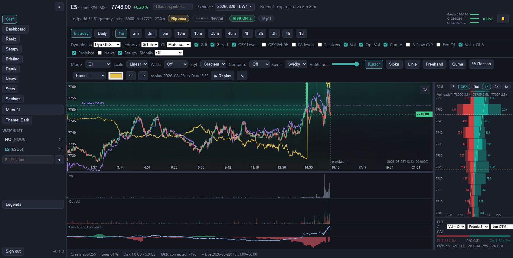
Kompletní checklist je v GitHub issue #1 — Setup uživatelského prostředí. Stručně:
127.0.0.1⚠️ Jedno přihlášení na username: když se stejným IBKR loginem přihlásíš jinde (mobil, druhé PC), TWS na tomto počítači spadne a aplikace ztratí data. Po návratu se stačí v TWS znovu přihlásit — aplikace se připojí sama.
Poklepej na ikonu GEXLens na ploše. Skript spustí všechny služby na pozadí a otevře prohlížeč na adrese aplikace. První start po vypnutí počítače trvá ~30–60 s.
cd "D:\Documents\Visual Studio Code\GEX"
docker compose up -d # start na pozadí
# prohlížeč: http://127.0.0.1:8080
docker compose stop # zastaví služby (data zůstávají)
Aplikaci můžeš nechat běžet trvale — engine sbírá data, jen když běží a je přihlášené TWS; mimo seance prostě čeká.
IBKR: connected a začnou přibývat dataObrazovka se skládá z (shora dolů, zleva doprava):
| Prvek | Popis |
|---|---|
| Sidebar (vlevo) | Přepínání obrazovek (Graf / Dashboard / Řetěz / Setupy / Briefing / Deník / News / Stats / Settings), odkaz Manuál, přepínač tématu Dark/Light, editovatelný watchlist (kliknutí na ticker přepne instrument, × odebere, políčko dole přidá nový; při chybě se pod formulářem ukáže hláška a seznam se sám srovná se serverem), tlačítko Legenda (modál s ukázkami všech prvků grafu a čtením „roste/klesá"), sekce Nedávné (v1.12, #521 — posledních 8 zobrazených symbolů, klik znovu otevře i ad-hoc pohled; od v1.13 jen symboly mimo watchlist — aktivní ad-hoc symbol je tu zvýrazněný a do watchlistu se nepřimíchává (#989), ostatní položky mají křížek ×, kterým vyhledaný symbol vyřadíš (#987); vyřazení se pamatuje, aktivní symbol vyřadit nejde — nejdřív přepni jinam; tooltip připomíná rozdíl „ad-hoc pohled" vs. „plný sběr jako watchlist"), verze. Tlačítkem « se sbalí. |
| Hlavička — horní řádek | Kdo a za kolik: ticker a název instrumentu, poslední cena + denní změna v %, kalendářový selektor expirace (v1.12, níže) s typem (denní/týdenní/měsíční/kvartální/EOM) a odpočtem „expiruje ≈ za X h" — velké expirace nesou velké OI. Vedle selektoru je vyhledání symbolu (v1.12, #521): našeptávač CME produktů, výběr otevře ad-hoc pohled přes tastytrade — positioning libovolného produktu bez přidání do watchlistu a bez spotřeby IBKR linek (kotace + OI + BS greeks z mid; bez objemů, flows a Cum Δ — ty nese jen plný sběr). Takový symbol nese štítek „ad-hoc · tastytrade“ a žije, dokud je zobrazený (~3 min po odchodu se uklízí); pro trvalé sledování ho přidej do watchlistu. Symbol z watchlistu štítek nikdy nemá — od v1.14 ad-hoc pohled ustoupí, jakmile má produkt plnou IBKR pipeline (dřív mohl po restartu enginu chvíli viset i nad daty z IBKR). Výběr položky z našeptávače pohled otevře rovnou — Enter je potřeba jen při ručním dopsání celého symbolu (v1.13, #983). Aby ad-hoc symbol data skutečně dostal, drží si engine ve streamu tastytrade rezervu na ~2 ad-hoc pohledy (v1.13, #982; do té doby mohl při plném streamu tiše mlčet). V selektoru najdeš i následující expiraci (sbírá se souběžně — čtení positioningu příští seance). |
| Hlavička — spodní řádek | V jakém je to stavu: GEX režim badge (zelený fade / červený momentum / žlutá flip zóna; tooltip s playbook hintem; když flip leží mimo měřené pásmo — celý Dyn GEX profil je na jedné straně nuly — badge se od v1.13 neztratí, režim se odvodí ze znaménka profilu u spotu a tooltip to přizná, #864), chip Tendence (pětipásmová škála Strong Short … Strong Long; klik = rozpad hlasů 12 složek, zatím „nekalibrováno"; hlas s vahou 0 — od v6 poloha mezi zdmi — je v rozpadu zašedlý s textem „váha 0, do skóre nevstupuje“, #1632), chip stavu sentimentu RISK ON / RISK OFF / NEUTRAL (klik = sparkline dnešního SentIndexu, MA5/MA10 a aktivní témata; tečka = nepotvrzená intradenní změna), settle watch, chip gamma útesu a vpravo ukazatele pokrytí dat, indikátor ● Live / ○ Offline a zvonek notifikací. |
| Řádek timeframe | Intraday/Daily a rozlišení 1m, 2m, 3m, 5m, 10m, 15m, 30m, 45m, 1h, 2h, 3h, 4h, 1d. Intraday agreguje minutová data do zvolených košů (svíčky OHLC, objemy se sčítají); Daily zobrazí sloupec za každý uložený den (roste s historií, max 14 dní). |
| Řádek přepínačů | Dropdown Dyn plocha (Off / Dyn GEX / Dyn Charm / Dyn Vanna — modelované pole jako podklad heatmapy, kombinuje se s libovolným módem, kap. 18; výchozí je Dyn GEX (#837) — modelované gamma pole je hlavní přidaná hodnota nástroje, Off zvol, když chceš jen měřenou mapu). Dropdown Vrstvy (n) (v1.16, #1084) — multi-výběr vrstev v grafu: GEX Levels (flip/centroid/Max Pain + OI zdi, viz kap. 5), GEX žebřík (top významné striky jako barevné úrovně: zelené call nad cenou, červené put pod ní, s podílem na síle strany v cenovce; jen striky s dostatečnou dominancí), Zdi (call/put wall linie), 2. zeď (druhá nejsilnější koncentrace strany, tečkovaně), FA levels (flow-adjusted flip/walls z odhadu OI: ranní OI + dnešní klasifikovaný tok — ukazuje stěhování zdí dřív, než to potvrdí zítřejší OI). Dropdown Panely (n) (v1.16, #1084) — multi-výběr spodních panelů v pořadí, jak se kreslí shora dolů: Vol / Opt Vol / Δ Flow C/P / Evo OI / Cum Δ / Sentiment; panel Sentiment má vlastní položku, nezávislou na checkboxu News. Závorka u obou dropdownů ukazuje počet zapnutých („žádný“ = nic). Checkboxy přímo v liště: Sessions (automatické markery světových seancí), Vol + OI Δ, Projekce, News (markery zpráv) s dropdownem Významné/Vše (výchozí Významné — stejná definice jako upozornění na zprávy, kap. 14), dropdown Signály (Off / NEWS / COMBINED — šipky Long/Short na ceně, kap. 11d). Co odškrtneš, zmizí — layout se přeskládá. |
| Chipy stavu trhu | Settle watch — segment „settle 22:00 · nad/pod X ±d b": klíčová úroveň dne (nejsilnější zeď dle dominance, silné mají přednost) a kolik bodů k ní zbývá; teze dne „uzavřeme nad X?" na jeden pohled. Chip „odpadá X % gammy" — kolik gammy dnešní expirací večer zmizí z trhu (běžný den ~15 %, před OPEX i přes 60 %); struktura, která dnes drží cenu, zítra nemusí existovat. Chip ⌛ kalendáře expirací (v1.20, #1189) — jen v kvartálním expiračním týdnu: „roll proběhl 10. 9. · expirace U6 pá 18. 9. 15:30", „OPEX týden", „kvartální expirace U6 dnes 15:30 (SOQ)", „po OPEXu — bez opční podpory"; tooltip vysvětluje, co fáze znamená. Stejné ⌛ jsou v ose grafu (jako TradingView) a v Briefingu je karta Expirační týden. Chip ◌ „tenká mapa (n/3)" (v1.21, #1245) — jen když pozicování, které by cenu tlumilo nebo pinovalo, právě chybí: aspoň dvě ze tří podmínek — tenká gamma (celkové GEX i gamma u ceny pod 25. percentilem posledních 20 seancí téhož symbolu; prahy jsou relativní, ES a NQ se liší o řády), slabé zdi (dominance obou < 25 %), slitá mapa (flip, obě zdi a max pain do 0,25 % ceny od sebe — referenční 21. 9. 2026 po kvartálním OPEX: vše na 7 650). Tooltip vypisuje ✓/✗/? per podmínku. Co z toho plyne: nic netlumí a nic nepinuje, pohyby jsou delší v obou směrech, zdi jen orientační, setupy od zdi a pin k Max Pain nedávají smysl, dokud se mapa neobnoví. Liší se od útesu gammy: útes říká, co po settle odpadlo, tenká mapa, co teď zbylo (a může nastat i mimo OPEX, po prudkém pohybu mimo pozicování). Fáze 1 jen ukazuje, nic se neblokuje. Od mechaniky v6 (#1657) se stav mapy počítá jen z živé ceny: bez ní (výpadek zdrojů, zavřený trh o víkendu a v denní pauze) je neznámý a chip chybí. |
| Ukazatele pokrytí dat | Tři drobné proužky Greeks, OI a OHLC s podílem „kolik z kolika". Zelený = úplné, žlutý = díra (část striků čeká na dopočet, nebo chybí svíčky), ztlumený s pomlčkou = hodnotu teď nelze změřit (typicky odpojené IBKR nebo pár vteřin po startu). Prvky nemizí — ukazatel, který zmizí, vypadá jako rozbité rozhraní, ne jako chybějící data. |
| Přepínač OI | Měřené / FA odhad — zdroj Open Interest pro heatmapu i profil (persistováno per symbol, default Měřené). FA odhad = ranní OI + ρ·objem strany za seanci (od mechaniky v6, ADR-0061; do v6 ranní OI + α·klasifikovaný čistý tok): k dispozici dřív než publikovaný archiv, ale je to odhad — při pochybnosti věř Měřeným. Od v6 FA OI jen přibývá: zavírání pozic nevidí, takže strike, kde se dnes zavírá, nadhodnotí. FA má i vlastní Dyn GEX plochu v dropdownu Dyn plocha a vlastní FA levels. Minuta bez FA řad je v režimu FA mezera (ADR-0057 bod 4, #1632): OI vrstvy, Dyn GEX podklad i GEX křivka pravého profilu tam nic nekreslí, poslední FA profil se přes ni nedrží a graf tiše nepřejde na měřené OI. Takovou minutu dělá od mechaniky v6 minuta bez měřeného objemu IBKR v řetězu, FA vypnutá do kalibrace (bez 5 platných dnů ρ) nebo řetěz po settle; díra ve sběru (minuta bez snímku) se kreslí stejně jako v měřeném režimu. Den úplně bez FA ukáže badge „FA odhad · den bez FA“ — tak vypadá i sekundární expirace (FA píše jen aktivní řetěz) a ad-hoc pohled; měřené OI vrátí přepínač OI → Měřené. |
| Lišta grafu | Mode (7 metrik heatmapy), Scale (Linear/√/Log/Pow⅓), Walls (Off/Peak/Center/Smooth/Flip/Ridge vše/Ridge dominantní), Styl (Gradient/Blobs), Contours (Off/Major/All), Cena (Svíčky/Křivka) + Viditelnost, nástroje anotací + barva, ⧉ Rozsah a Preset… (kap. 8b), tlačítko ✦ Čistý pohled (níže), indikátor zdroje dat, tlačítko ⏮ Replay. |
✦ Čistý pohled (#238). Jedno tlačítko v liště grafu pro rychlé event čtení „kde je největší sázka" bez přepínání šesti checkboxů: zapne Walls = Ridge dominantní, z GEX Levels nechá jen Max Pain, vypne Contours, Zdi, 2. zeď, GEX žebřík, FA levels, Projekci, Sessions, News i Setupy a cenu přepne na svíčky; Dyn plocha zůstává, jak ji máš. Před zapnutím si aplikace uloží snímek všech dotčených voleb a druhé kliknutí je vrátí přesně — včetně nevýchozích hodnot. Aktivní preset (tlačítko svítí) i snímek přežijí refresh prohlížeče (ukládají se s ostatními volbami grafu), takže se k původnímu nastavení vždycky dostaneš zpět. | Heatmapa | Hlavní plocha — viz kapitola 5. | | Strike profil | Pravý panel; předěl mezi grafem a panelem jde táhnout (kurzor ↔) — viz kapitola 7. | | Spodní panely | Vol / Opt Vol / Δ Flow / Cum Δ — viz kapitola 8. | | Playback lišta | Defaultně skrytá (aplikace jede vždy live) — zobrazí ji tlačítko ⏮ Replay; viz kapitola 9. | | Stavová lišta | Zdraví datové pipeline — viz kapitola 15. |
Kliknutí na expiraci v hlavičce otevře měsíční kalendář místo plochého
seznamu dat. Proč z pohledu tradera: expirace se čte polohou v týdnu —
pátek = týdenní (větší OI), třetí pátek = měsíční/kvartální (největší), poslední
obchodní den = EOM. Seznam YYYYMMDD tuhle informaci schovává; v kalendáři
vidíš na jeden pohled, jak daleko je nejbližší „velká" expirace a jestli
mezi dneškem a plánovaným držením pozice nějaká neodpadá.
Jak to číst:
Výchozí expirace a víkend (v1.13). Po otevření aplikace se vybere nejbližší expirace ≥ den seance — ve všední den tedy dnešní 0DTE řetěz, v neděli po otevření Globexu (17:00 CT) rovnou pondělní (#945; dřív se o víkendu omylem vybírala nejvzdálenější expirace z řady tastytrade, pro kterou se nic nesbírá, a graf spadl na demo data). Když pro vybranou expiraci není uložený ani jeden den (sobota, neděle před otevřením, svátek), otevře se poslední seance, která data má — typicky páteční (#946). Doskok se vždy ohlásí bannerem nad grafem s oběma daty: „Pro 2026-08-31 nejsou uložená data — zobrazena poslední seance 2026-08-28. Mimo obchodní dny je to očekávané; ve všední den to znamená, že sběr neběžel." Banner svátek od výpadku sběru nerozlišuje, podle data poznáš sám, jestli je to v pořádku; ruční volba expirace v selektoru banner zruší. Čerstvě přidaný ticker bez dat zůstává u vybrané expirace s hláškou demo dat.
Heatmapa zobrazuje matici čas (osa X) × strike (osa Y). Každá buňka je jedna minuta jednoho striku; intenzita barvy odpovídá hodnotě zvolené metriky. Teal/zelená = call strana, červená = put strana.
| Akce | Efekt |
|---|---|
| Kolečko nad plochou | Zoom obou os ukotvený ke kurzoru (bod pod myší zůstává na místě) |
| Kolečko nad pruhem osy | Zoom jen dané osy (levý okraj = osa strikes, spodní okraj = osa času) |
| Tažení za pruh osy Y (levý okraj) | Roztahování/stahování cenové osy — zvětší/zmenší svíčky svisle |
| Tažení / kolečko na pravém panelu (profil) | Ovládá stejnou cenovou osu Y jako levý okraj — táhni svisle nebo kolečkuj přímo nad profilem (kurzor ↕) |
| Tažení za pruh osy X (spodní okraj) | Roztahování/stahování časové osy — zvětší/zmenší svíčky vodorovně (kotva u pravého okraje: poslední svíčka drží pozici) |
| Tažení v ploše | Posun (pan) |
| Dvojklik nebo tlačítko ⟲ (pravý horní roh) | Reset zobrazení na výchozí pohled |
| Pohyb myší | Crosshair — svislá linka snapnutá na svíčku, vodorovná sleduje kurzor; synchronizovaný se strike profilem i spodními panely + tooltip buňky (minuta, strike, hodnoty call/put) |
Crosshair navíc ukazuje osové štítky jako TradingView: dole na ose X datum + čas pod svislou linkou, vpravo na ose Y cenu na úrovni kurzoru. Cena je zaokrouhlená na minimální tick instrumentu (ES/NQ = 0,25) — mezi 7530,00 a 7530,25 tedy nic není. Crosshair zůstává viditelný i mimo svíce — když posuneš graf a jedeš myší přes prázdnou/budoucí plochu, nezmizí.
Pohled se nesmýká sám. Graf se automaticky napasuje (fit na cenové pásmo + ukotvení historie) jen při změně datasetu — jiný symbol, expirace, timeframe nebo den. Resize pravého panelu, živý přírůstek minut ani úprava os tvůj pan/zoom nepřepíšou. Kdykoli se vrátíš na napasovaný pohled dvojklikem nebo tlačítkem ⟲.
Spodní panely (Vol / Opt Vol / Cum Δ) sledují časovou osu heatmapy — při posunu či zoomu osy X se roztahují synchronně.
Select Mode přepíná, co buňky zobrazují (přepočet je okamžitý, bez čekání na server; dostupné nad živými/replay daty):
| Mode | Co ukazuje |
|---|---|
| OI | Open interest per strike (výchozí). Dokud ranní OI nedorazí, automaticky se použije volume. |
| Vol OTM | Volume jen OTM opcí (call nad spotem, put pod spotem) — čerstvá spekulace/zajištění |
| Vol ITM | Volume ITM opcí |
| Vol ± | Rozdíl call − put volume (zeleno-červená divergenční mapa) |
| OI+OTM | Vážená kombinace OI (60 %) a OTM volume (40 %) — „kde sedí i kde se dnes hraje" |
| OI−ITM | OI očištěné o ITM volume |
| OI±All | Rozdíl call − put OI (divergenční) |
| VEX | Vega Exposure = vega × OI per strana — kolik $ přecenění drží dealeři na striku při změně IV o 1 bod. Strikes s velkou VEX = „volatility walls": při skoku IV (zprávy, FOMC) se tam nejvíc přehedgovává. Před událostmi relevantnější než OI mapa. |
| VEX ± | Rozdíl call − put VEX (divergenční zobrazení vega rizika) |
Select Scale mění škálu hodnot: Linear, √ (zvýrazní slabší), Log, Pow⅓. Znaménko se zachovává.
Nápověda při dominanci jedné strany (v1.12). Když na Linear jedna strana převyšuje druhou víc než 5 : 1 (na 0DTE běžná situace), slabší struktura splyne do tmy — vypadá to, že pod cenou „nic není", přitom tam koncentrace jsou, jen je přebila normalizace. Vedle Scale se pak objeví hint „cally dominují 12 : 1 — zkus √ nebo Log": klik přepne škálu a slabší strana se vynoří, aniž by se s daty cokoli dělalo. Škála se nikdy nepřepíná sama (je to tvoje volba) a hint jde křížkem trvale zavřít.
Sytost projekce klesá se vzdáleností (v1.12). Projekční zóna (kap. 18, ADR-0006) je spočítaná ze zmrazeného „teď" — pár košů dopředu je solidní odhad, konec horizontu spíš náčrt. Dřív měla celá projekce jednu sníženou sytost; teď sytost od předělu Today lineárně klesá, takže míra blednutí přímo říká, jak moc modelu věřit. Na denní ose je to nejdůležitější — rozdíl mezi „zítra" a „za měsíc" je zásadní.
Select Walls kreslí bílé čárkované linie počítané z právě zobrazené vrstvy:
Ridge vše vs. Ridge dominantní. „Vše" kreslí každý lokální hřeben s prominencí aspoň 10 % maxima — v hustém 0DTE dni to bývá i dvacet souběžných čárkovaných čar, které sice nesou informaci, ale při rychlém čtení splývají. „Dominantní" z nich vybere jeden: hřeben s největší kumulovanou hodnotou přes den (síla × doba trvání — dlouhý pás se střední koncentrací poráží krátký špičkový záblesk; při shodě vyhrává hřeben blíž aktuální ceně). Je to odpověď na otázku „kde sedí největší sázka", bez šumu; když chceš vidět i vedlejší koncentrace, přepni zpět na Vše. Dřív uložená volba Ridge se po aktualizaci chová jako Ridge vše.
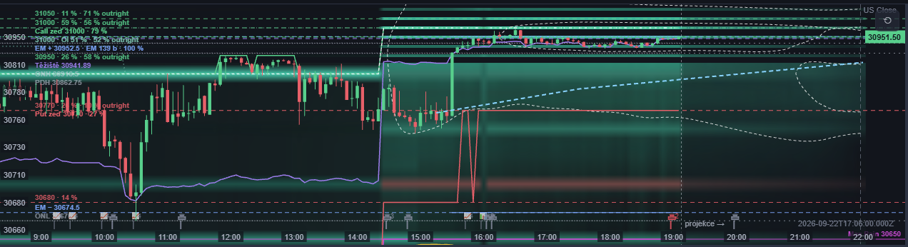
Bílé přerušované vrstevnice nad vyhlazeným polem. Prahy jsou procenta síly z 99. percentilu pole, zvlášť za kladnou a zápornou stranu — na každé straně tedy vždy uvidíš dvě čáry bez ohledu na to, jak silný den je:
Major a All nejsou „důležité vs. všechny" úrovně — je to jen posun obou prahů. Major kreslí užší obrys kolem nejsilnějších jader, All zachytí i střední zóny. Počet čar je v obou případech stejný (dvě na stranu).
Nad čím se kontury počítají: vždy nad právě zobrazeným polem, ne nad vlastním datovým zdrojem. Se zapnutou Dyn plochou obrysují modelované pole, jinak měřený grid podle zvoleného Mode. Proto sedí na barvy — používají týž jmenovatel (p99) jako barevná škála.
Jak číst:
| Kde je cena | Co to znamená |
|---|---|
| nad oběma čarami | uvnitř tlumící zóny — výkyvy se zaplácnou |
| mezi čarami | přechodové pásmo, tlumení slábne |
| pod oběma | mimo zónu — pohyb se rozjede snáz |
Vzdálenost obou čar nese informaci: čím blíž jsou u sebe, tím ostřejší je přechod mezi „drží" a „pustilo" (podrobné čtení v kap. 18). Kontury jsou doplněk ke zdem, ne samostatný signál: zdi říkají kde je hranice, kontury jak ostrá je.
Pozor na záměnu: kontury i Walls módy kreslí stejným stylem (bílá čárkovaná). Rozeznáš je podle tvaru — kontury jsou uzavřené křivky kolem koncentrací, walls jsou linie vedené zleva doprava.
| Linie | Barva | Zapíná |
|---|---|---|
| Flip (zero-gamma) | žlutá | GEX Levels |
| Centroid (HVL) | fialová | GEX Levels |
| Max Pain | magenta | GEX Levels (počítá se z OI) |
| Call wall | zelená | Zdi |
| Put wall | červená | Zdi |
| 2. zeď | zelená/červená tečkovaná (bez cenovky) | 2. zeď |
| OI zeď (call / put) | jemně tečkovaná, studenější teal/růžová, v cenovce podíl na OI strany | GEX Levels (v1.13, níže) |
| FA levels | vlastní odstíny s prefixem FA | FA levels |
| Walls módy | bílé čárkované | select Walls |
| Sessions markery | šedé svislé (Tokio, Londýn, US Open…) | Sessions |
| News markery | svislé značky u spodní hrany + glyf kategorie | News |
| Šipky signálů | ▲ teal / ▼ červená na cenové křivce | Signály |
| Cenová vrstva | zelená/červená | vždy (viz kap. 6) |
Každá úroveň se navíc promítá jako horizontální čárkovaná linka přes celou šířku s barevnou cenovkou u levého okraje (poslední známá hodnota) — na první pohled vidíš, kde úrovně právě leží. Vpravo na ose je štítek aktuální ceny; v pravém dolním rohu timestamp posledních dat.
Stohování cenovek (#238). Když dvě pojmenované úrovně padnou na tentýž strike (typicky Max Pain = call zeď na 0DTE), jejich cenovky by se překreslily a jedna by nešla číst. Kolidující štítky se proto řadí pod sebe jako popisky seancí — výš položená úroveň má štítek výš, každý další se odsune jen o nejmenší nutný kus, nekolidující štítky zůstávají u své čáry. Sloupec u levého okraje a štítek Max Pain vpravo se stohují každý zvlášť.
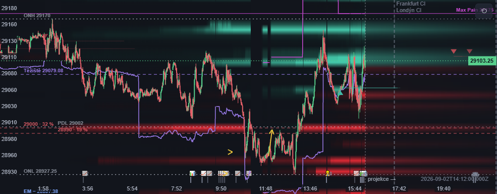
Call/put zeď je maximum gamma profilu — kde dealeři hedgují právě teď a působí okamžitě přes tok. OI zeď je strike s největším otevřeným zájmem na své straně (call nad spotem, put pod ním) — magnet k expiraci a místo, kde se pozice zavírají. Gamma profil se počítá jen nad obálkou IBKR (±200 b, strop market data linek), kdežto denní OI z tastytrade pokrývá celý řetěz — masa OTM putů tak často leží mimo dosah gamma zdí a trader, který podle zdi umisťuje stop, o ní jinak neví.
· 74 % outright říká,
kolik dnešního objemu na striku zdi vytiskly outright obchody se stranou od
burzy; zbytek je strukturovaný objem (nohy spreadů, bloky). Hypotéza: zeď
z outright drží dealer jako plnou pozici, zeď ze spreadů má gammu částečně
vykompenzovanou. Měření 8. 10. 2026 je neprůkazné (v1.31, #1019): zdi
s outright ≥ 40 % drží bodově o 5–10 p. b. líp, ale na 13 seancích to nejde
odlišit od náhody; přeměření po ≥ 40 seancích. Do té doby jen informace —
kreslení zdi, setupy ani upozornění to nemění. Stejné číslo má i GEX žebřík.Se zapnutým News se na časové ose kreslí značky zpráv a makro událostí (krátký tick těsně nad pásem popisků seancí u spodní hrany + glyf kategorie nad ním: 🏛 Fed, 📊 inflace, 👷 trh práce…; od v1.13 mají pevnou výšku v pixelech a nerostou s výškou grafu — dřív zabíraly spodní třetinu plochy, #980; klik na marker trefí jen tenhle spodní pás, výš patří klik heatmapě):
Všechny zprávy zobrazeného dne (v1.21, #1290): graf načítá zprávy po seancích — celý obchodní den (17:00–17:00 CT) jedním dotazem, bez stropu počtu. Dřív bral posledních 100 zpráv, což při toku ~150 zpráv za hodinu pokrylo jen ~30–40 minut, a markery starších zpráv během dne mizely. Nové zprávy dorazí živě (do ~2 s), každou minutu se navíc dotáhne úsek od posledního úspěšného dotažení s 30min rezervou (klasifikace, výsledek makra, výpadek API). Celý den se načte znovu po výpadku spojení a také po vypnutí a zapnutí vrstvy News, návratu z Daily nebo z prohlížení jiného dne — během pauzy graf zprávy neodebíral a díra by jinak zůstala do obnovení stránky. Když se zprávy nepodaří načíst, nad grafem se ukáže hláška s dnem, který chybí — prázdný pás markerů pak neznamená den bez zpráv; hláška zmizí, jakmile se ten den načte (další pokus do minuty). Zprávy víkendu (pátek 17:00 – neděle 17:00 CT) na ose žádné seance neleží; najdeš je v záložce News a v upozornění před otevřením.
Pokud se některý strike nepodařilo obnovit (výpadek dat), jeho buňky jsou vyšedlé s nižší sytostí — poznáš tak stará data od živých. Souhrn běží ve stavové liště (Repair: retrying N…).
V liště grafu volbou Cena:
Graf se při načtení automaticky napasuje na cenové pásmo dne (svíčky vyplní výšku); okolní zóny heatmapy dosáhneš tažením/kolečkem za osu Y, reset vrací napasovaný pohled. Po startu s málem dat (ráno) mají svíčky fixní šířku ukotvenou k pravému okraji — neroztahují se přes celý graf jako dřív.
Posuvníkem Viditelnost (10–100 %) cenovou vrstvu zeslabíš, aby nepřebíjela heatmapu pod ní — užitečné hlavně u svíček. Štítek aktuální ceny zůstává vždy plně viditelný.
Bary podkladu se drží navždy (ES i NQ od července 2024), takže graf nekončí začátkem dnešní seance: doscrolluj doleva a starší seance se dotáhnou samy, den po dni, až na začátek archivu. Platí přitom:
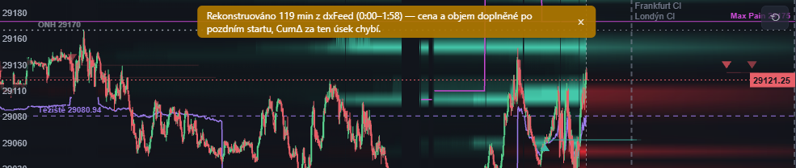
Když engine naběhne až po otevření seance (restart PC, TWS spuštěná pozdě), chybějící minuty barů podkladu se doplní z dxFeed (tastytrade) — jedno krátké spojení mimo živou datovou cestu, měřené minuty se nikdy nepřepisují. Doplněný úsek ale není měření a nesmí splynout s naměřeným klidem, proto nad grafem svítí banner: „Rekonstruováno 14 min z dxFeed (12:03–12:16) — cena a objem doplněné po pozdním startu, CumΔ za ten úsek chybí." Ta poslední věta je podstatná: svíčka nese OHLCV, ne printy s agresorem, takže tok se rekonstruovat nedá (stejný princip jako šrafované chybějící OI). Opční vrstva (Greeks, snapshoty) se zpětně nedoplňuje vůbec — IBKR ji historicky nedá (ADR-0024). Banner jde zavřít křížkem a zůstane zavřený i po obnovení stránky; znovu se ukáže jen při jiné množině rekonstruovaných minut (další backfill, jiný den nebo symbol, #977).
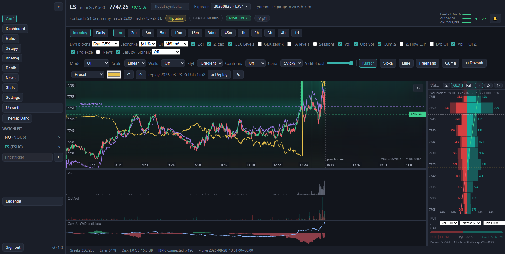
Horizontální skládané pruhy pro každý strike, na stejné výškové ose jako heatmapa — strike v profilu je vždy na stejné úrovni obrazovky jako v grafu a při zoomu/posunu osy Y se hýbou synchronně:
Call doprava (teal), put doleva (červená) od symetrické osy; popisky Put/Call nahoře
Každý pruh má dvě složky odlišené sytostí: Vol (sytá) a OI Δ (světlejší)
U konce pruhů jsou číselné hodnoty (Δ-vážené kontrakty) — na každém k-tém řádku, ať se nepřekrývají. Pruhy končí kousek před okrajem, takže nepřetékají mimo panel.
Dole osa množství (Δ-vážené kontrakty, formát „5k") — vidíš, jak velké zdi reálně jsou; měřítko reaguje na zoom
Šedá přerušovaná linka = aktuální cena (spot)
Tlačítko GEX = křivka modelovaného Dyn GEX profilu (zelená doprava = dealeři tlumí, červená doleva = zesilují); žlutá přerušovaná linka = dynamický flip (průchod křivky nulou). Detaily čtení: kapitola 18.
Pod hlavičkou panelu běží readout Vol leadeři — top 3 strany (strike × C/P) podle opčního volume vybrané expirace, např. „7450P 4,1k · 7500P 2,9k". Sleduje playback i Σ souhrn; na zítřejší expiraci před eventem ukazuje, kde se trh zajišťuje (viz alert Vol koncentrace).
Tlačítko Rel / Abs přepíná měřítko: Rel = normalizace na největší pruh ve výřezu (výchozí), Abs = zaokrouhlený „hezký" strop (kulaté hodnoty na ose, stabilnější délky pruhů mezi snímky)
Tlačítka 1× / 2× / 4× zvětšují měřítko pruhů
Tlačítko Kontrakty / Prémie $ (v1.17, #1126) přepíná jednotku pruhů, čísel, osy i Vol leaderů. Kontrakty = Δ-vážené počty (výchozí). Prémie $ = volume × mid × multiplikátor per strana a strike (OI složka = OI × týž mid) — říká, kam tekly peníze, ne kolik kontraktů: 1 000 kontraktů levných křídel za pár dolarů nepřebije 100 ATM kontraktů za násobně víc. Stejná definice jako jednotka Prémie $ v panelu PUT / CALL: mid (bid+ask)/2 je k zobrazené minutě, u objemu tedy aproximace (neváží cenu v okamžiku obchodu). Strana se zmrzlou kotací nebo bez midu má pruh nulový (tooltip řádku ukáže „— (bez midu)“); je-li takových kontraktů přes 30 %, hlavička nese štítek bez midu N %. Bez jediného použitelného midu (Σ souhrn přes expirace, replay bez kotací, načítání) profil spadne zpět na kontrakty a řekne to štítkem Prémie nedostupné → kontrakty. Když aplikace nezná multiplikátor kontraktu (API ho vrací se seznamem expirací, #1400), profil zůstane v kontraktech se štítkem Multiplikátor neznámý → kontrakty. Dvoutónový rozklad outright/struktura (níže) platí v obou jednotkách; v diferenčním módu B−A (kap. 8b) zůstává rozdíl v kontraktech. Volba se pamatuje.
Tlačítko Σ = souhrn přes všechny sbírané expirace tohoto instrumentu (pondělní + úterní řetěz…). Hlavička se změní na „Σ expirací"; heatmapa zůstává u zvolené expirace. Celkový positioning bez přepínání.
ⓘ v hlavičce (v1.18, #1126) = Metodika: najetím odpověď na nejčastější otázku „odkud ta čísla jsou" — OI z ranního archivu CME přes IBKR (jednou denně, přes den se nemění; striky mimo obálku IBKR nesou denní OI z tastytrade), FA odhad OI_est = ranní OI + ρ·objem strany (do v6 + α·klasifikovaný tok) jako model, Vol a OI Δ jako Δ-vážené složky (proto „kontrakty" ≠ hrubé počty), Prémie $ = objem × mid × multiplikátor. Kliknutí otevře tento manuál.
Najetí myší na řádek zvýrazní strike v celé aplikaci (crosshair) a dole zobrazí tooltip: OI call/put, Vol call/put, ΔOI vs. včera C/P (kde přes noc přibyly/ubyly pozice; jen per expirace, v Σ režimu se neukazuje), vzdálenost od spotu
Šířku panelu změníš tažením předělu mezi grafem a panelem (kurzor ↔). Panel jde roztáhnout hodně doleva (až ~360 px zbyde na graf), aby byla vidět celá délka pruhu i s číslem.
Profilem ovládáš i cenovou osu Y grafu — tažení svisle nebo kolečko nad profilem stlačuje/roztahuje ceny stejně jako levý okraj heatmapy (kurzor ↕).
Šrafovaná půlka řádku = OI pro tenhle strike chybí (IBKR ho nedodalo) — něco jiného než změřená nula, která zůstává prázdná. Šrafura říká „nevíme", prázdno říká „nula".
Štítek „Vol nedostupný“ v hlavičce (v1.16, #1067) = objem této minuty není k dispozici: opční řetěz běží z tastytrade fallbacku (kap. 17), který denní objem v sémantice IBKR nedodává. Pruhy a čísla ukazují jen složku OI Δ, tooltip řádku má u Vol pomlčky a Vol leadeři se nevedou. Není to pokles objemu — objem se vrátí s návratem řetězu na IBKR.
Čteš z něj na první pohled, kde sedí dominantní call a put koncentrace — typicky walls.
Objemová část sloupce v profilu Vol + OI Δ má dva tóny téže barvy strany:
Není to šrafování — to patří výhradně chybějícímu OI. Když rozdělení chybí
(starší den bez řady tisků, výpadek tastytrade), sloupec se nedělí a tooltip
řekne proč. Tooltip jinak ukáže C: 77 outright (39 %) · 122 struktura | P: ….
Jak číst:
Poctivé omezení: rozdíl obsahuje i blokové obchody, které směrové být mohou. Čti to jako „strukturovaný a dohodnutý objem", ne čistě „spready".
Poměr obou stran vybrané expirace ve třech jednotkách (dropdown): Kontrakty (kusy), Prémie $ (kolik peněz za pozice někdo zaplatil — mid × kontrakty × multiplikátor; OTM křídla s tisíci levných kusů nepřebijí ATM pozici za násobně víc) a Notional $ (nominál podkladu). Základ volíš druhým dropdownem: Vol + OI / Vol / OI. Červený-zelený pruh ukazuje poměr, čísla PUT/CALL a P/C. Zmrzlé kotace se do prémií nepočítají — při >30 % chybějících midů panel zašedne s vysvětlením, aby prémie nelhala.
Třetí dropdown volí rozsah striků: Jen OTM (výchozí — call se počítá jen nad spotem, put pod ním; ITM prémie je z velké části vnitřní hodnota, ne sázka na směr, a umí poměr úplně zkreslit), Vše, nebo Čas. hodnota (mid − intrinsic; má efekt jen u Prémie $). Bez známého spotu obě volby poctivě padají na Vše. Popiska pod pruhem vždy říká, z čeho číslo vzniká. S aktivním časovým oknem (kap. 8b) panel přepne na okenní režim — počítá jen to, co se zobchodovalo v okně.
Kontrakty vs. Prémie $: proč se liší rozsah dat. Řetěz sahá dál, než kam dosáhne měření. Striky mimo obálku IBKR nese denní OI z tastytrade — u nich známe otevřený zájem, ale ne kotace, takže do Kontraktů vstupují, do Prémií ne (bez midu nejde spočítat, kolik peněz v nich leží). Proto může Prémie $ ukazovat výrazně jiný poměr než Kontrakty a být zašedlá: to není chyba, ale přiznání, že peněžní pohled má užší záběr. Pro čtení celkového pozicování používej Kontrakty, prémie ber jako pohled na to, kde se reálně obchoduje.
OI, Vol, nebo Vol + OI? Každý základ odpovídá na jinou otázku. OI = co leží v knize z minula (pozicování). Vol = co se obchoduje dnes (čerstvý tok). Vol + OI obojí sčítá, což je pohodlné, ale míchá dvě veličiny dohromady. Zajímavý je hlavně rozdíl mezi nimi: když je Vol výrazně nižší než OI (např. 0,37 proti 0,66), dnešní obchodování je callovější než stávající pozice — někdo cally nakupuje teď, neleží tam z minula.
Proč večer „zmizí" jedna strana pruhů? Pruhy jsou Δ-vážené — násobí se deltou opce (kolik futures dealer na kontrakt reálně drží). Ke konci seance se delta polarizuje (viz gamma crunch, kap. 18): OTM opce mají deltu skoro 0, ITM skoro 1. Nad spotem proto zbývají hlavně červené (ITM puty) a pod spotem zelené (ITM cally). Není to chyba — surové OI/Vol obou stran pořád vidíš v tooltipu řádku; zapnutím Σ se přimíchá zítřejší expirace s měkčími deltami a obě strany se zase objeví.
Panely se sdílenou časovou osou s heatmapou. Každý zvlášť vypneš checkboxem v horní liště (Vol / Opt Vol / Cum Δ / Δ Flow C/P / Evo OI). Od v1.12 se kumulativní delta jmenuje Cum Δ všude stejně — dřív měl checkbox název „Delta“ a panel „Opt Δ“, což byly tři názvy jedné věci.
| Panel | Co ukazuje |
|---|---|
| Vol | Minutový objem podkladu (futures) — šedé sloupce |
| Opt Vol | Minutový objem opcí, barevně call (teal) / put (červená) vedle sebe. Počítá se jen objem nad dosavadním maximem denního objemu kontraktu v seanci (#1602): IBKR číslo kmitá (862 ↔ 863) a v pauze Globexu propadá, dřív se každý návrat započetl znovu a Opt Vol byl v RTH nadsazený o 12–70 %. Minuta bez objemu (fallback tastytrade) nepřidá nic a po návratu IBKR nenese celý denní objem. První minuta po mezeře v objemu je 0 (#1632): strike, který v předchozí minutě objem nenesl (fallback tastytrade, díra ve sběru, strike nově v pásmu), by v ní ukázal objem celé mezery, ne jedné minuty — ES 2. 10. po 3 h fallbacku by minuta 19:18 UTC nesla C 44 243 / P 49 343. Přírůstek jen posune maximum, další minuta počítá od něj (řada 100 → bez objemu → 130 → 150 dá 0, 0, 0, 20). V Daily ose = součet za seanci, objem mezery v něm zůstává (intradenní panel je za den s mezerou menší než Daily; ES 2. 10. o 38 %); počítá se ze snímků při čtení, takže je opravený i zpětně (ES 15. 10.: 349 944 místo 501 501). Setupy T3 (aktivita) a T4 (podíl Δ Flow) a hlas tendence delta_flow počítají objem po staru až do mechaniky v6 (#1403), do té doby se s panelem mírně rozcházejí. |
| Δ Flow C/P | Delta-vážený opční tok zvlášť za call a put stranu (|Δ| × přírůstek volume nad dosavadním maximem, stejně jako Opt Vol, včetně nuly v první minutě po mezeře v objemu). Z něj čteš, na které straně se právě obchoduje — např. „uzavírání callů" = call sloupce slábnou. Default vypnutý (checkbox Δ Flow C/P). |
| Cum Δ | Kumulativní delta-vážený tok opčních obchodů (ne podkladu) jako plocha nad nulou (zelená) / pod nulou (červená). Do mechaniky v6 (#1403) dává znaménko minutový midpoint test (poslední cena vs. střed bid/ask), který podle měření jde proti pohybu ceny (#1018) — směr toku do v6 čti z linky CVD podkladu (níže). Od v6 nese plocha jen tisky se stranou agresora od burzy (dxFeed TimeAndSale, ADR-0057): roste = agresivní kupci call delty / prodejci put delty, klesá = opačně; objem bez tisku (nohy spreadů, bloky) do toku nejde. Minuta, kdy tisky z tastytrade neběžely, je mezera: plocha se přeruší (žádná spojnice), hodnota pod crosshairem je „—“ a Cum Δ po ní pokračuje od poslední měřené úrovně. Jakmile engine běží na v6, minuty se znaménkem z midpoint testu se nekreslí — legenda ukáže „· midpoint, obrácené znaménko (#1018)“ a linka CVD podkladu zůstává (data se nemažou, #1588). V agregaci TF koš nese poslední měřenou úroveň (koš celý v mezeře = mezera), v playbacku plocha končí na pozici přetáčení, chip okna Rozsah ⧉ ukáže přes mezeru „— (neměřeno)“ (kap. 8b). V Daily ose = poslední měřená úroveň dne; den s mezerou má pod crosshairem „neúplný (N min bez tisků)“, den bez měření je mezera. Resetuje se na začátku obchodního dne. |
| Evo OI | Vývoj celkového Open Interest v čase, zvlášť call (teal) a put (červená), schodovité kreslení. V Daily ose = hodnota na konci každého dne. Default vypnutý (checkbox Evo OI). Podrobně níže. |
| Sentiment | SentIndex z news-engine (zapíná checkbox News): intraday spojitá řada kolem nuly (kladná = risk-on tón zpráv, záporná = risk-off), v Daily pohledu OHLC svíčka indexu za každý den (open nese overnight zbytek). V replay staršího dne panel od v1.13 ukazuje řadu zobrazeného dne a při přetáčení drží osu s ostatními panely (dřív bral dnešní řadu a při přetáčení se posouval doleva, #976). |
Linka CVD podkladu v panelu Cum Δ (agresivní nákupy − prodeje ve futures,
#829): stranu agresora dává přímo burza (dxFeed TimeAndSale), nic se neklasifikuje.
Linka má vlastní měřítko — čte se tvar a strana od nuly, ne výška proti ploše;
legenda „· CVD podkladu“, pod crosshairem „· CVD …“. Popisek „· osa od X“:
kumulativ se resetuje na open Globex seance (17:00 CT), první minuta osy ale už
nese nasčítaný tok — výchylku čti proti této hodnotě, ne proti nule.
Popisek „od HH:MM“ (engine startoval uprostřed seance) popisuje kap. 15 (catch-up).
V Daily se linka zatím nekreslí: poslední minuta seance leží v pauze Globexu, kde je CVD 0 (#1633). Linka se živě posouvá každou minutu. Zůstává i v timeframu 5m a víc
(koš ukazuje poslední hodnotu; popisek panelu „od HH:MM“ zůstává také) a v playbacku
končí na pozici přetáčení. Do opravy #1578 stála živě až hodinu na hodnotě
z posledního načtení dne. V agregaci a v playbacku zmizela úplně, v playbacku
i s panelem Evo OI. Schodovitá čára Evo OI v playbacku končí na pozici přetáčení
a za ní ukazuje „—“; dřív za pozicí spadla na nulu (#1591).
Ovládání panelů (v1.12). Každý spodní panel jde ovládat myší jako graf:
Úchyt na spodní hraně panelu dál mění jeho výšku (každý panel zvlášť, minimum 25 px, výšky se pamatují; globální předěl mezi grafem a panely výšky opět sjednotí, #792) a předěl mezi grafem a panely zůstává beze změny.
Pohyb myší v kterémkoli panelu hýbe crosshairem ve všech panelech i heatmapě. Při najetí navíc uvidíš hodnoty ukazatele:
„Evo" = evolution, tedy vývoj. Panel je prostý součet Open Interestu přes všechny striky vybrané expirace, minutu po minutě — teal call, červená put. Jednotkou jsou kontrakty.
Trojúhelníkový glyf u nadpisu je tlačítko, ne značka v grafu. Je to velké řecké Δ a přepíná režim svislé osy:
| Režim | Co osa ukazuje |
|---|---|
| Δ (výchozí) | změnu od začátku osy — křivka startuje na nule, hodnoty se znaménkem (+30, −10) |
| abs | absolutní úroveň OI v kontraktech |
Výchozí je Δ proto, že celkové OI se za den mění řádově o promile — v absolutní škále by obě linky vypadaly jako rovné čáry a panel by nenesl žádnou informaci.
K čemu to je: objem sám o sobě neřekne, jestli obchod pozici otevřel, nebo zavřel. To dopoví až OI. Proto se Evo OI čte vedle panelů Opt Vol a Δ Flow, ne samostatně:
Plochý úsek neznamená „nic se neděje". OI chodí z IBKR přes tick 101 jen občas (viz ADR-0001), a schodovité kreslení je záměr — šikmá spojnice by si vymýšlela průběh, který jsme nenaměřili. Vodorovný úsek tedy čti jako „od posledního snímku nepřišla aktualizace".
Panel vždy ukazuje měřené OI; přepínač Měřené / FA odhad s ním nehýbe (ten se týká heatmapy a strike profilu).
Výběr okna [t1, t2] na časové ose: profil vpravo a P/C panel se přepočítají jen na to, co se zobchodovalo v okně — „co se nakoupilo v první půlhodině po openu", „co změnilo CPI". Vše se počítá lokálně, přepnutí je okamžité a funguje i v replay.
?range=) — reload
i sdílení odkazu ho udrží; playback ho neposouvá.US open +30 min, RTH, Globex noc (od začátku seance do openu), Posledních 30 min (v live klouže s časem — chip nese ⟳; ruční zásah klouzání vypne) a Od flip crossu (od posledního průchodu ceny zero-gamma flipem). Nedostupné volby jsou šedé s důvodem (před openem, bez flip crossu). Časy jsou DST-korektní z téže tabulky jako markery seancí.
Pruhy profilu ukazují objem zobchodovaný v okně (rozdíl kumulativů — OI zůstává statické k času t2, otevřené pozice nejsou tok). P/C panel v okenním režimu ukazuje premium jako hlavní číslo a kusový poměr vedle — rozdíl obou je sám o sobě informace (kusově vyrovnané okno může být penězi drtivě jednostranné). Tooltip nese top 5 striků dle podílu na prémiích a poctivé přiznání metodiky: premium ≈ objem okna × mid k t2 (neváží ceny jednotlivých obchodů).
Tlačítko +B v chipu přidá druhé okno (navazující, stejná šířka; okraje oranžově). Obě okna se tahají stejně; nové A (tažením mimo okna) srovnání ruší. Select v chipu přepíná profil:
P/C panel v duálním režimu přidá řádek P/C A · B · Δ. Chip nese CumΔ obou
oken.
V dialogu news markeru (klik na marker) jsou akce ⧉ +15 min / ⧉ +60 min (okno reakce na zprávu — tatáž okna, ve kterých se měří dopady) a ⧉ pre/post ±15 — nastaví A = 15 min před událostí, B = 15 min po ní a rovnou mód B−A: „co ta zpráva změnila".
Strike profil v okně (v1.12, #485). Při aktivním rozsahu profil defaultně ukazuje jen Vol — co se v okně skutečně zobchodovalo. OI je totiž statická EOD veličina (clearing ji počítá jednou denně; intradenní „změny" z tastytrade jsou jen dosypy téhož čísla) a k oknu nepatří. Přepínačem „jen Vol / OI (statické, EOD)" v hlavičce profilu jde OI složka přimíchat zpět — kreslí se ztlumeně se šrafovaným obrysem a tooltip ji značí „statické (EOD), nepatří k oknu": kontext „kde OI sedí vůči výběru", ne tvrzení, že se v okně změnilo.
Aplikace defaultně jede vždy live — ovládání replaye je skryté, aby nerušilo. Zobrazíš ho tlačítkem ⏮ Replay v liště grafu; od v1.18 (#1126) se rozbalí přímo v liště vedle tlačítka (▶, rychlosti, slider, Live), ne jako samostatný pruh pod spodními panely — graf ani panely se neposunou:
Celý den je po načtení v paměti — přetáčení je okamžité, bez čekání na server. Při přepnutí timeframe zůstává live pozice live a rozehraný replay se přemapuje proporcionálně.
V liště grafu vyber nástroj:
| Nástroj | Použití |
|---|---|
| Kurzor | Běžný režim (pan/zoom/crosshair) |
| Šipka | Táhni od–do; šipka s hlavičkou |
| Linie | Táhni od–do; rovná čára |
| Freehand | Kresli od ruky |
| Guma | Klikni poblíž anotace — smaže ji |
Vedle nástrojů je výběr barvy. Anotace jsou ukotvené k času a striku (ne k pixelům) — drží na svém místě při zoomu, panu i přetáčení, přežijí restart aplikace a jsou uložené zvlášť pro každý instrument a den.
Automatický scénář (výchozí, varianta A): 15 minut před US openem engine
sám sestaví scénář pro každý symbol z verdiktu dne, který v téže minutě
spočítal a uložil (kap. 11f, #1595; trend vyšších a nižších TF, tendence,
sentiment, cena vs. včerejší close, ΔOI přes noc, gamma režim). Scénář je
jeden na seanci a vznikne v první minutě okna s úplným verdiktem —
výpadek čtení dat nebo restart enginu ho jen odloží o minutu. Směr je verdikt
té minuty; uložený verdikt dne je poslední stav před openem, takže se od
scénáře může lišit. Při verdiktu long/short
jsou cíle nejbližší úrovně obratu ve směru (zdi, flip, těžiště, PDH/PDL/
PDC, ONH/ONL, ±EM; max 2), cesta vstup → cíl 1 → cíl 2, termín settle dne.
Při verdiktu „bez převahy" nebo „čekat na zprávu" scénář nevznikne a log
enginu řekne proč; verdikt dne se uloží i tak. Cesta se kreslí živě do heatmapy (modrá čárkovaná
čára) a snímek PNG si aplikace pořídí sama, jakmile máš graf otevřený. Karta
scénáře nese štítek auto a rozbalovací hlasy verdiktu (proč právě
tenhle směr a cíle). Nastavení: GEXLENS_SCENARIO_AUTO_MINUTES_BEFORE_OPEN
(ADMIN manuál; 0 = vypnutý scénář, verdikt dne se ukládá dál).
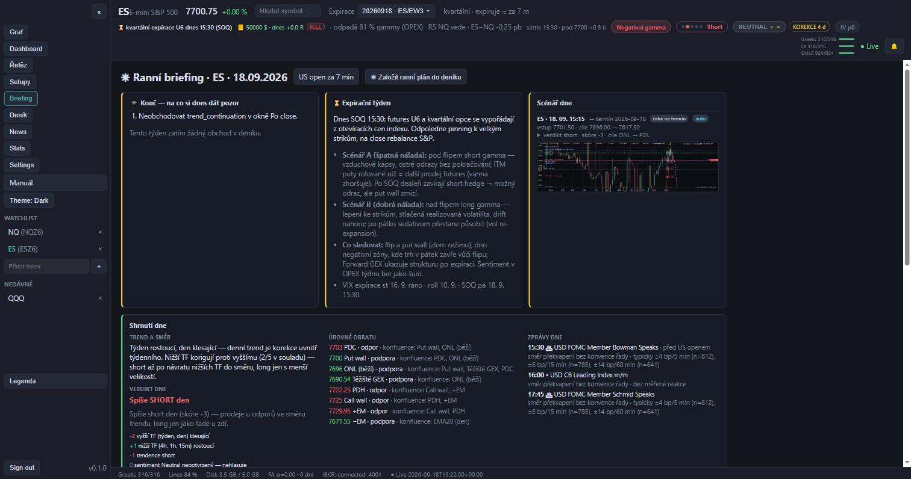
Ruční scénář (doplněk, štítek „ručně"): nakresli na živém grafu očekávanou cestu ceny (šipka nebo freehand) a klikni ✎ Scénář: aplikace pořídí snímek grafu s anotací, z geometrie odvodí cíle v pořadí (obraty cesty + koncový bod, jdou upravit, max 3), nabídne termín (settle dnešního dne nebo zvolené budoucí datum, do 60 dní) a poznámku.
Po termínu engine každý scénář sám vyhodnotí: zásah cíle 1, cíle 2 (až po cíli 1 — cesta má pořadí), zda pořadí drželo, a největší odchylku close od nakreslené cesty v bodech i násobcích EM dne vzniku. Výsledek: trefa (cíl 1 a případný cíl 2 po něm), částečně (cíl 1 ano, cíl 2 ne), mimo (cíl 1 ne). Kde to vidíš: Briefing → Scénář dne (otevřené scénáře se snímkem + poslední vyhodnocené), Stats → Scénáře dne (track record zvlášť pro auto a ruční scénáře: hit rate cílů, pořadí, medián odchylky — brána n ≥ 30 jako u verdiktu dne; automatické jen z aktuální verze pravidel verdiktu, stejně jako Verdikt dne — sekce verzi vypíše, např. „(v3)“, #1632), alert ve zvonku (a Telegramu) při vzniku i po vyhodnocení.
Zásady: scénář vzniká jen dopředu — na živém dni (v replay minulého dne
tlačítko není) a vyhodnocuje se výhradně z barů po jeho vzniku; nic se
nedopočítává zpětně. Scénář patří k obchodnímu dni (po–pá): o víkendu
automatický scénář nevzniká, termín ručního scénáře musí být obchodní den
(dialog o víkendu předvyplní pondělí a víkendový termín nepustí — nemá settle)
a scénář s termínem mimo seanci (víkendové z doby před #1309) se uzavře bez
upozornění: karta ukáže bez výsledku a „termín mimo obchodní seanci" (díra
v barech obchodního dne zůstává „bez barů v okně — nešlo posoudit") a do track
recordu se nepočítá. Snímky leží na disku (data/scenarios/); nad 1 GB
přijde alert „pročisti" — mazání je ruční v Settings → Scénáře dne (mizí jen
PNG, výsledky zůstávají).
Anotace se vážou na absolutní minutu dne × cenu — přepnutí timeframe (1m ↔ 15m) s nimi nehne. Kreslí se jen v den svého vzniku (per instrument a den) a dožívají s retencí dat.
Karty instrumentů z watchlistu: aktuální cena, stav dat (● live / offline), GEX režim badge, PCR sentiment (Put/Call ratio z vlastních dat: vol = dnešní tok, OI = držené pozicování, mini křivka = vývoj PCR vol za den s referencí 1.0; extrémy kontrariánsky), mini NetGEX profil (zelené/červené sloupečky = čistý positioning po stricích) a vzdálenosti k call/put wall. Slouží jako rychlý přehled, když sleduješ víc instrumentů.
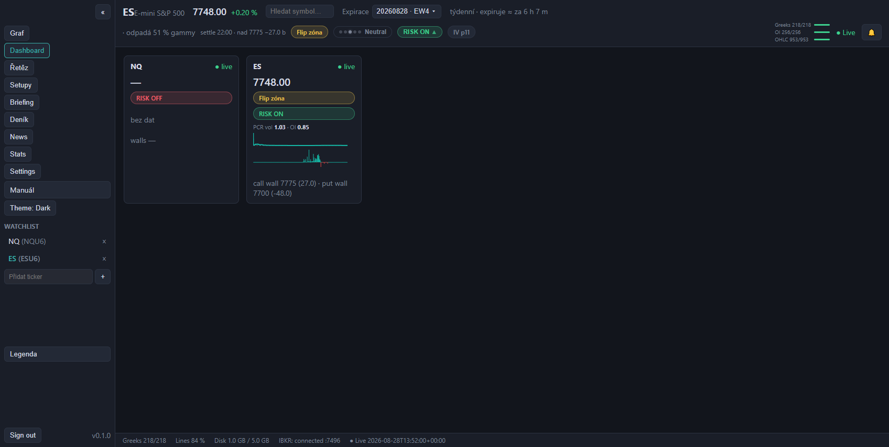
Obrazovka Řetěz v sidebaru ukazuje klasickou opční tabulku vybrané expirace: call strana vlevo, strike uprostřed, put vpravo, sloupce Bid/Ask/Last/Vol/IV/Δ/Γ/Θ/Vega/OI/ΔOI (put strana zrcadlově, ať OI sousedí se strikem). Data jsou živý pohled z poslední minuty sběru, obnovují se každou minutu; ΔOI porovnává s posledním archivovaným obchodním dnem (v pondělí s pátkem, #1309). Řádek nejblíž aktuální ceně je zvýrazněný (ATM), strany se zastaralými kotacemi jsou ztlumené. Expirace se přepíná selektorem v hlavičce — funguje i pro zítřejší řetěz.
Vlastní news-engine běží vedle datového enginu: sbírá zprávy a makro kalendář (ForexFactory, oficiální feedy Fedu, ECB, Bílého domu, BLS (CPI, PPI, zaměstnanost) a BEA (GDP, PCE), zpravodajské feedy, Alpaca, broker pásku z IBKR), klasifikuje kategorii, důležitost (1–3) a směr dopadu, a počítá z nich SentIndex — souhrnný sentiment s rozpadem po tématech. Nic z toho nechodí ven; vše se počítá lokálně.
Důležitost 1–3 se čte z předmětu titulku a ze zdroje (v1.22, #1293). Dřív stačilo klíčové slovo kdekoli v titulku nebo shrnutí, takže článek o osobních financích se zmínkou „payroll tax“ dostal nejvyšší důležitost a jen asi každá jedenáctá zpráva s důležitostí 3 byla opravdu zásadní. Teď: důležitost 3 mají jen události (rozhodnutí Fedu, vydaná US data s číslem, pohyb ropy, eskalace nebo příměří, cla), 2 téma jako předmět zprávy, zmínka a názor 1; sociální sítě bez kurátora nejvýš 1, agregátory o stupeň méně; kalendář podle dopadu a měny (USD High 3, Medium 2, rozhodnutí ECB/BoE/BoJ 2, ostatní měny 1). Na ohodnoceném vzorku je teď zásadních 8 z 10 zpráv s důležitostí 3 (dřív necelá 1 z 10). Kategorie se také bere z předmětu — pohyb ropy kvůli válce je Energie, ne geopolitika. Historie zpráv se překlasifikuje jednorázově (verze klasifikace zůstávají).
Klasifikace jede na pravidlech, ne na AI modelu. LLM větev (Gemini) je od srpna 2026 zakonzervovaná: měřením se ukázalo, že hodnotu nepřidávala — proti pravidlům měla horší úspěšnost (0,484 vs. 0,516) a statistickou branou neprošla ani jednou. Zůstává vypnutá i s historickými klasifikacemi, aby šlo srovnání kdykoli zopakovat.
Model dostává titulek i začátek článku. Do srpna 2026 se ukládalo jen prvních pár desítek znaků, takže se rozhodovalo prakticky jen podle titulku; nově se ukládá plné znění a modelu jde titulek + úvodní odstavec. Celý článek záměrně ne — stovky slov na zprávu by se při dnešní velikosti vzorku naučily nazpaměť místo zobecnění.
Karta ukazuje významné zprávy posledních 12 h s naměřeným dopadem na ES i NQ. Najdete ji na dvou místech:
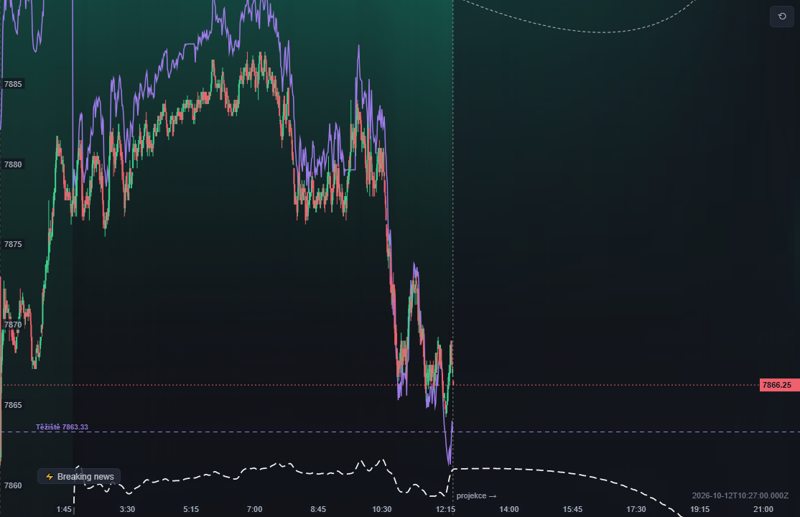
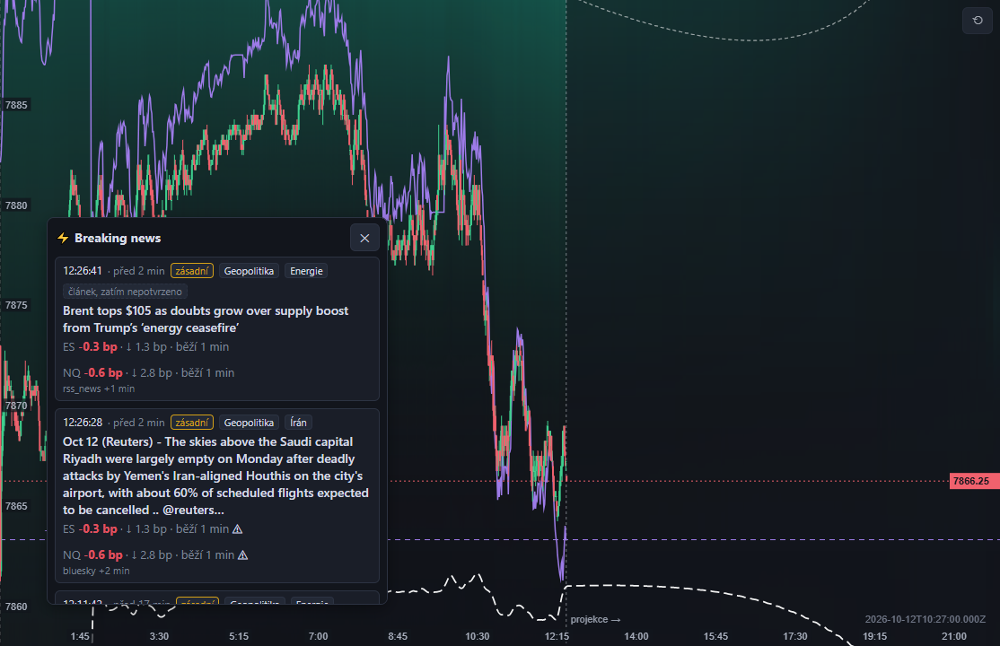
Každá položka nese:
alpaca +1 s,
rss_news +6 min).Karta se obnovuje à 15 s a hned po příchodu nové významné zprávy. Nová zpráva má kategorii a důležitost do ~1 s od příjmu. Pod seznamem je čas stavu („stav k 14:37:30“) a při plném počtu i „50 nejnovějších“. Karta je vždy živá: i při prohlížení historického dne nebo v playbacku ukazuje zprávy posledních 12 h, ne zprávy zobrazeného okamžiku. Skóre z textu se na kartě neukazuje (#740), rozhoduje naměřená reakce trhu.
Feed je od srpna 2026 kartový: každá zpráva je karta s kategorií,
relativním stářím („před 16 s"), typem, důležitostí, skóre klasifikace
a hlavně naměřeným dopadem — Δ5m −16,5 bp říká, o kolik se trh po
zprávě skutečně pohnul v párovacím okně (barva dle znaménka; tooltip nese
všechna okna a ⚠, když do okna spadl jiný významný event a pohyb nejde
přičíst téhle zprávě). Dopad se měří pro aktivní symbol (ES/NQ). Nahoře
řádek Stav: RiskOn/RiskOff · trend ↑/↓/→. Plný text zprávy je přímo
na kartě; opravy klasifikace (⚠ u titulku) zůstávají.
Od v1.18 (#1126) má karta tlačítko Vysvětlit: na kliknutí přijde česky
ve 2–4 větách, co ta zpráva je, kdo za ní stojí a přes jaký mechanismus
může hýbat ES/NQ — z modelu Gemini (free tier, žádný placený model), jen na vyžádání. Vysvětlení záměrně
neříká směr ani nedává doporučení (to měří aplikace z reakce trhu) a do
SentIndexu, vah ani signálů nijak neteče — je to nápověda pro porozumění,
ne signál. Jednou vysvětlená zpráva se pamatuje (druhé kliknutí text jen
sbalí/rozbalí, nic nestojí). Totéž tlačítko je i přímo v grafu: klik na
news marker otevře dialog zpráv v té minutě a každá má své Vysvětlit. Funkce vyžaduje Gemini klíč v .env
(ADMIN manuál, týž jako u klasifikace); bez něj tlačítko odpoví „Vysvětlení
není k dispozici". Při přetížení modelu (free tier) přijde „zkus za chvíli".
Od v1.12 karta nese i kontext tématu: badge téma −0,22 je kumulativní
index tématu v okamžiku zprávy — do jakého narativu zpráva přišla
(zpráva „Fed drží sazby" čtená do zhoršujícího se tématu je jiná informace
než táž zpráva do klidu). Referenční formát ukazuje Intraday | Week zvlášť;
u nás obě okna splývají (poločasy dozvuku máme ≤ 6 h, příspěvky starší než
den jsou prakticky nulové), proto je hodnota jedna. Kategorie na kartě je
proklik — otevře téma v panelu Témata i se zdrojovými zprávami.
did:…, jejichž každý post se bere), Reddit subreddity
a vlastní RSS feedy. Každá položka má checkbox — vypnutí je vratné
(položka zůstává v seznamu přeškrtnutá a jde kdykoli zase zapnout);
✕ položku smaže nevratně — smazané defaulty se už nevracejí.
Bluesky kurátoři se projeví za běhu do ~10 minut; subreddity, vlastní feedy
a vypnutí zdroje po restartu news-engine.Proč z pohledu tradera: souhrnný SentIndex je jedno číslo — když se v něm potká zlepšující se makro se zhoršující se geopolitikou, vzájemně se vyruší a nevidíš nic. Téma se přitom kazí postupně, zatímco cena ještě drží — přesně tenhle náskok byl v referenční analýze vidět u Íránu: index tématu ukazoval zhoršování dřív, než to trh reflektoval, a oznámené memorandum o porozumění indexem skoro nehnulo (rychlé systémy tomu nevěřily). Rozpad po tématech tenhle signál zachraňuje.
Jak to číst:
Chip v hlavičce (kap. 4) ukazuje stav podle polohy denního close SentIndexu vůči klouzavým průměrům MA5 a MA10: nad oběma = RISK ON, pod oběma = RISK OFF, mezi nimi = NEUTRAL. Nepotvrzená intradenní změna má tečku a signály z ní nesou ⚠. Historii přepnutí (vlny, hloubku a délku) najdeš na obrazovce Stats.
Pozor na čtení jmen: RISK ON/OFF popisuje náladu zpravodajského toku, ne předpověď směru ceny — měření na naší historii ukázalo, že trh se k náladě často chová kontrariánsky (výprodeje nálady se vykupovaly). Směr smí říct jen kalibrovaný signál, nikdy samotné jméno stavu.
Per instrument: od v1.5 má každý podklad vlastní řadu — ES a NQ mají oddělený index, vlny i stav (chip se přepíná se zobrazeným instrumentem; tatáž zpráva hýbe každým podkladem jinak — technologická zpráva pohne NQ víc než ES). Karty na Dashboardu ukazují stav obou vedle sebe.
Vedle chipu stavu se objeví badge KOREKCE n d / POKUS / NEGACE, když nálada spadne. Vlna RISK OFF trvá průměrně den a půl, takže sama o sobě korekci neměří — badge sleduje epizodu: denní close SentIndexu v σ (stejná škála jako sparkline) klesne o ≥ 1 σ pod své 20denní maximum. Pak se čeká, co z toho bude:
Ve spodním panelu Sentiment v Daily pohledu je čárkovaná linie prahu (20denní maximum − 1 σ přepočtené na jednotky svíček) — pokles close pod ni = start epizody. Na obrazovce Stats je blok Korekční epizody s počty pokusů/negací a tabulkou posledních epizod.
Čti to jako předběžné. Práh 1 σ a horizont 10 dní jsou zástupné parametry z prvního měření (září 2026, 7 týdnů živých dat); kalibrace proběhne, až bude aspoň 20 rozhodnutých epizod na instrument a σ škála čistě z živých dat (~listopad 2026). Stejně jako u stavu jde o náladu zpráv, ne o směr ceny — vztah k následnému pohybu trhu měření nepotvrdilo. Detail v tooltipu badge.
Dropdown Signály v řádku přepínačů: Off / NEWS / COMBINED (obě větve se počítají vždy, dropdown jen vybírá zobrazenou):
Signál se ukáže jako šipka na cenové křivce (▲ Long teal / ▼ Short červená, sytost = síla) s vodorovnou stopou platnosti do své expirace. Tooltip u crosshairu nese režim, zdůvodnění, n vzorků a Wilson LB. Při nepotvrzené změně stavu sentimentu nese šipka ⚠.
Svátky a zkrácené seance (v1.29, #1308). Aplikace zná svátky US trhu (Nový rok, MLK, Presidents Day, Velký pátek, Memorial Day, Juneteenth, 4. 7., Labor Day, Den díkůvzdání, Vánoce) i zkrácené seance (den po Dni díkůvzdání, Štědrý den, 3. 7.). Svátek není obchodní den: nevzniká scénář ani verdikt dne a nechodí upozornění na chybějící data. O Vánocích, Novém roce a Velkém pátku je Globex zavřený celý den, o ostatních svátcích se obchoduje do 12:00 CT (19:00 našeho času). Zkrácená seance končí v 13:00 ET (19:00 našeho času) a v tu chvíli je i settle a přechod na další expiraci.
Jen v obchodní době (v1.13, #968). Signály vznikají výhradně, když se ES/NQ obchodují (neděle 17:00 CT → pátek 16:00 CT, mimo denní pauzu CME 16:00–17:00 CT). Doklad z produkce: 21 z 39 signálů vzniklo se zavřeným trhem a ani jeden neměl vyhodnocení — bez barů není z čeho výnos změřit — a hlavně se nedal obchodovat: než trh otevřel, positioning byl jinde. Expirace starších signálů a dopočet jejich výsledků běží dál i o víkendu.
Empirická gate: signál z daného typu zprávy se pouští, až když má bucket n ≥ 30 změřených reakcí, spodní mez úspěšnosti (Wilson LB) > 0,50 a průměrnou reakci aspoň 1 bp (ADR-0042 — spolehlivý směr s nulovým pohybem není obchodovatelný). Dokud žádný bucket gate neprošel, u dropdownu běží „⏳ sběr dat X %" — aplikace se přiznaně učí, místo aby střílela od boku. Statistiky jsou režimově podmíněné (RiskOn/RiskOff/Neutral, gamma ±): když má režimový pohled dost dat, použije se přednostně, jinak se korektně spadne na celkový.
| Sekce | Co ukazuje |
|---|---|
| Korekční epizody sentimentu (v1.17, #565) | Pokusy vs. negace korekce nálady (viz kap. o stavu RISK ON/OFF): počet, průměrná hloubka v σ a délka per třída, probíhající epizody, tabulka posledních deseti (start, rozhodnutí, třída, hloubka, referenční úroveň). Označeno předběžné, dokud není 20 rozhodnutých epizod — parametry jsou zástupné, ne kalibrované |
| Vlny sentimentu | Historie RISK ON/OFF vln — hloubka, délka, četnost per směr. Hloubky jsou od v1.11 v jednotkách σ škály (#640): řada má dvě éry s různým měřítkem (backfill osciloval v ±0,4, bohatší živý feed dává násobně větší denní součty) a dělení σ(100 seancí) je činí srovnatelnými — 2 σ znamená „dvakrát větší výchylka než běžný den", ať vlna proběhla loni nebo dnes. Surová hodnota zůstává v textu aktuální vlny |
| Volatilita zpráv (v1.12, #567) | Denní průměr |naměřené reakce| na zprávy (bp, okno 5 min, kontaminovaná okna mimo) s dlouhodobými pásmy min/průměr/max přes celou historii (~2 roky). Proč: směr a velikost jsou dvě různé informace — SentIndex říká KAM nálada táhne, tenhle index JAK MOC trh na zprávy reaguje; bez pásem nepoznáš, jestli je číslo velké. Jak číst: u minima trh zprávy ignoruje (klid), kolem průměru běžný provoz, u maxima panika/euforie (každá zpráva hýbe trhem) — obdoba Fear & Greed, jen rychlejší. Sekce vypisuje i největší naměřené vrcholy jmenovitě — musí sedět na známé epizody (5. 8. 2024 VIX spike apod.), jinak ukazatel nefunguje a poznáš to hned |
| Hit-raty bucketů | Empirický model reakcí na zprávy: úspěšnost per kategorie × důležitost × překvapení, přepínač okna reakce (+5/+15/+30/+60 min) a režimu (vše / RiskOn / RiskOff / Neutral / gamma ±), progres ke gate |
| Výkon setupů (v1.10) | Sharpe ratio a equity křivka simulace: denní ΣR přes všechny symboly watchlistu (jen aktuální mechanika detektoru), anualizovaný Sharpe celkem + za posledních 30 seancí, max drawdown, karta Všechny setupy — 1 kontrakt (čistě, hrubě, poplatky), Účet 50k (jen obchodovatelné) a USD simulace s exekucí micro kontrakty dle kalkulačky (Trading nastavení) včetně nákladů. Od v1.23 vše z celé historie, počítá server (#1319) — dřív jen posledních 200 setupů na symbol. Do 60 seancí varování o malém vzorku — potvrzení cíle Sharpe > 2 vyžaduje 400+ seancí |
| Setupy per režim | Úspěšnost šablon T1–T7 rozpadlá podle GEX režimu — které setupy fungují v jakém prostředí (cíl vs. stop, timeouty mimo; celá historie aktuální mechaniky) |
| Releasy — předem registrované hypotézy (v1.22, #1296) | Živý stav hypotéz o reakci trhu na ohlášené releasy: H1 teplejší jádro inflace → za 15 min níž (ES, NQ), H3 po CPI je ES za 60 min výš (jen ES, do upozornění nejde), M1 výchylka za 15 min nad běžným dnem u CPI/NFP/FOMC/PPI/PCE (ES, NQ). Sloupce: stav (ověřuje se šedá / ověřeno zelená / zamítnuto červená), živě k/n, 95% interval, další kontrolní bod a historie výzkumu (jen popisně). Počítají se jen releasy od 1. 10. 2026 a rozhoduje se jen při n = 10, 20 a 30: ověřeno = dolní mez intervalu nad 50 %, zamítnuto = horní mez pod 50 % nebo n = 30 bez ověření; kritéria se už nemění a rozhodnutí je konečné — pozdější oprava dat ho nezmění (tooltip nadpisu). U řádku rozbalíš posledních 10 releasů (✔/✘ a výnos či výchylka v bp). Když se data nenačtou, sekce ukáže chybu |
| Track record | Mechanické equity křivky strategií (signály, setupy) + drawdown |
| Latence zdrojů | Jak rychle který zdroj doručuje zprávy (medián, p90, podíl dávek) |
| Striky se zasekly / zase jedou | Část pásma opakovaně nejde opravit (repair kola bez úspěchu) — TWS pro ně přestala dodávat modelGreeks; hint restart TWS. Návrat se ohlásí |
| Drift hlídka | Alert, když se čerstvá úspěšnost bucketu statisticky rozejde s historickou — model přestává platit (⚠ badge už u přepínače Signály) |
| Ranní retro pass | Denní přehodnocení včerejších klasifikací s odstupem |
Deník stojí na metodice SMB Capital („The PlayBook"): hodnotí se proces, ne
P/L — kvalita setupu a exekuce se známkuje nezávisle na výsledku. Má dva
profily: SMB (akciový) a Futures (ES/NQ — předvyplní se podle
symbolu); profil se ukládá k záznamu a přepíná ve formuláři.
Typy záznamů: pozorování / hypotéza / retrospektiva dne (volný text
Strukturovaný obchod: PlayBook setup (obchoduje se jen to, co je v playbooku), plán vs. exekuce, grading setupu A/B/C nezávisle na výsledku, grading exekuce, mistake tagy (uzavřený číselník — každá chyba má spočitatelnou cenu), emoce, failure mode. PlayBook je archiv pojmenovaných setupů (teze, podmínky vstupu, invalidace, management); vyřazený setup se deaktivuje, nikdy nemaže. Klíče se kryjí se šablonami detektoru — jde srovnat „co detektor nabídl" s „co jsem vzal".
Auto-snapshot GEX kontextu: k obchodu se automaticky uloží poziční mapa v okamžiku vstupu (režim, flip, zdi, vzdálenosti) — jako hodnota, ne odkaz. Po měsíci tak jde rozlišit „setup nefunguje" od „vzal jsem ho v podmínkách, ve kterých platit nemohl". Tohle žádný komerční deník neumí.
Denní rituál: ☀ ranní plán (předvyplní ho Briefing, kap. 11f) a večerní Daily Report Card — den se hodnotí po segmentech seance (Globex noc, US open +30, dopoledne, odpoledne…), protože degradace výkonu odpoledne se v denním průměru schová. Segmenty jsou tatáž okna jako v grafu a presetech.
Futures vrstva (profil Futures): automatický tag seance z času záznamu, R v bodech (1 R znamená totéž na ES i MES — v dolarech by růst size maskoval degradaci skillu), volatilitní režim (ADR-0028), makro tag, kontrakt/roll.
Statistiky (obrazovka Stats): win rate, profit factor, expectancy, Σ bodů, histogram R, plánované vs. realizované R:R; řezy per setup, per seance, per GEX režim; cena chyb (kolik R stojí každý mistake tag) a „nabídl a přeskočil" u promeškaných.
Rychlý vstup: ✎ u Replay (aktuální minuta), Shift+klik do grafu (minuta pod kurzorem), ☀ z Briefingu. Fulltext hledání a export MD zůstávají.
Přepínač vrstev pro aktivní obchodování — informací, které nepotřebuješ ke čtení positioningu, ale k exekuci. Default vypnuto; když se vrstvy osvědčí, přepínač zmizí a stanou se standardní součástí aplikace. Dnes pod něj patří:
V Settings → Trading nastav velikost účtu (USD) a riziko na obchod
(%) — ukládají se jen v prohlížeči, na server nikdy neodcházejí. Karta
setupu pak pod RRR ukazuje řádek typu riziko 50 $ (1 %) · stop 8 b → ES 0× · MES 1×: počet kontraktů = riziko / (stop v bodech × hodnota bodu),
vždy zaokrouhleno dolů, vedle plného kontraktu i micro varianta (MES/MNQ).
Nezávisí na Traders mode — je součástí karty setupu.
Od v1.19 vedle toho běží serverový sizing (#1185, kap. 18) — ten počítá s účtem 50 000 $ v jednotkách aplikace a rozhoduje, zda je setup vůbec obchodovatelný; kalkulačka v prohlížeči zůstává jako rychlý přepočet na tvůj reálný účet a mikro kontrakty.
Stop vůči volatilitnímu režimu (v1.11). Pod kalkulačkou je druhý řádek:
stop = 20 % rozsahu · režim normální (p54). Proč tu je: stejný stop
v bodech je v jiném volatilitním režimu úplně jiný obchod — stop 8 b je
v klidném dni rozumný odstup, v krizovém dni šum, který vystřelí každý
zákmit. Řádek přepočítává stop na podíl typického denního rozsahu
(vol režim z karty Volatilita, kap. 11f) a ve zvýšené/krizové volatilitě
se zvýrazní s ⚠. Jak číst: vysoké procento = konzervativní stop (menší
pozice, víc prostoru), nízké jednotky procent ve zvýšeném režimu = stop
těsnější než obvykle — zvaž menší pozici, nebo širší stop s micro kontrakty.
Řádek NIC nemění automaticky, jen ukazuje; bez spočteného vol režimu se
nekreslí (žádné dosazování „normálu").
Plán dne na jedné obrazovce před US openem — čistá kompozice dat, která už aplikace sbírá; nic se tu nepočítá nově. Obnovuje se každou minutu, v hlavičce běží odpočet do US openu (9:30 New York, DST-korektně).
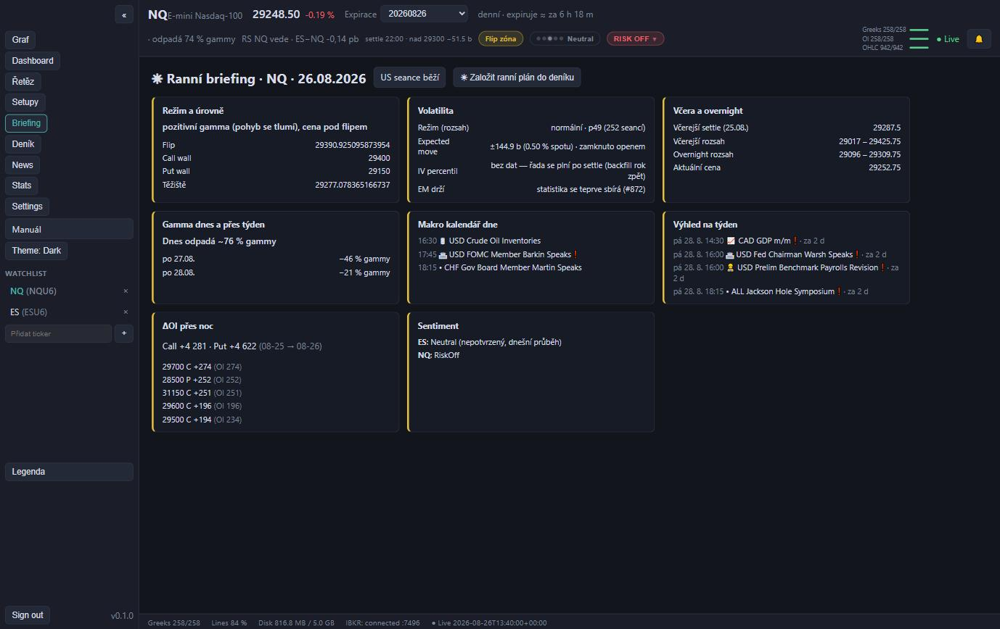
| Karta | Co ukazuje |
|---|---|
| Shrnutí dne (v1.16, #1090) | Přes celou šířku nahoře. Trend a směr (čtení z karty Trend); Verdikt dne — Spíše LONG den / Spíše SHORT den / Bez převahy / Počkat na tisk z hlasování s pevnými vahami (ADR-0035 §3: trend vyšších TF ±2, nižších ±1, tendence ±1/±2, potvrzený sentiment ±1, overnight vs. včerejší close ±1, ΔOI ±1 při převaze ≥ 10 %, gamma: negativní +1 ve směru trendu, pozitivní táhne skóre k nule — po útesu ≥ 50 % gammy minulé seance nebo ve stavu tenká mapa pozitivní gamma nehlasuje (v1.18, #1241: tenká gamma netlumí; v1.21, #1245: při souběhu útesu a tenké mapy je to jeden nulový hlas s oběma důvody, ne dva); práh ±3) — každý hlas má vypsaný důvod, chybějící data = nulový hlas „bez dat"; High-impact zpráva před US openem = „Počkat na tisk". Úrovně obratu — jeden seznam podle vzdálenosti od ceny: gamma (flip, zdi, těžiště), PDH/PDL/PDC, ONH/ONL, ±EM, denní EMA20; role odpor/podpora, konfluence úrovní do 0,1 % ceny. Zprávy dne — čas v Praze, směr překvapení z konvence řady („nad konsensem = risk-off"), typická velikost z naměřených reakcí kategorie (medián |ret| v 5/15/60 min, n), nebo poctivé „bez měřené reakce". Verdikt je heuristika a počítá a ukládá ho engine (#1595), ne Briefing — pro každou obchodní seanci a symbol, který engine sbírá (dnes ES a NQ), bez ohledu na to, jestli máš Briefing otevřený: od začátku seance (17:00 CT předchozího dne = 0:00 našeho času) každých 5 min, posledních 15 min před US openem (9:30 ET = 15:30 našeho času) každou minutu; v týdnech, kdy se USA a Evropa liší v přechodu na letní čas, jsou oba časy o hodinu jinak. Platí poslední stav před openem; od openu je verdikt zmrazený, protože se hodnotí pohyb od openu a hlas overnight by už nesl jeho část (#1585). Vstupy: včerejší close (PDC) = close k settle předchozí obchodní seance (16:00 ET, zkrácená seance 13:00 ET; v pondělí pátek), cena = živá cena enginu, gamma a ΔOI z aktivní expirace enginu — ne z expirace zvolené v hlavičce; při jiné zvolené expiraci se hlasy gammy a ΔOI mohou lišit od karet Režim a úrovně a ΔOI přes noc. Briefing verdikt nepočítá, jen ukáže uložený řádek (obnova každou minutu): před openem předběžný — „engine ho přepočítává každých 5 min, od 15:15 každou minutu; platí poslední stav před openem 15:30" a stáří („uloženo 15:25, před 3 min"); po openu zmrazený — „poslední zápis 15:29", bez živého přepočtu (ani „Počkat na tisk" se po vyjití zprávy nezmění). Když enginu chyběl některý vstup (výpadek čtení API, po restartu ještě bez levels nebo tendence, od mechaniky v6 i živá cena — „spot: poslední cena … stará N s“, #1600), karta to řekne: „předběžný, neúplný (chybí: gamma útes: HTTP 500) …" nebo „zmrazený, neúplný (chybí: …)"; úplný výpočet neúplný řádek přepíše, neúplný úplný nikdy. Bez řádku: „Verdikt zatím nevznikl" (seance běží), po openu viditelná mezera „Verdikt pro tuto seanci nevznikl" — nic se nedopočítává. Víkend a svátek NYSE: „Verdikt se nevydává — … není obchodní seance" (#1309). Symbol, který engine nesbírá (ad-hoc pohled, symbol nad limitem instrumentů): „Engine pro tento symbol verdikt nepočítá". Chyba čtení je výslovná, s kódem („Verdikt se nepodařilo načíst (HTTP 503)"), ne „bez verdiktu". Řádky do seance 16. 10. 2026 ukládal Briefing (jen když byl před openem otevřený, s PDC z poslední minuty Globexu), od 19. 10. engine — oboje pod verzí pravidel 3 (ADR-0035, dodatek 2026-10-17); zpětně se nic nedopočítává. Pět řádků z 9. 9.–2. 10. 2026 vzniklo nebo se přepsalo ještě po openu — track record je nepočítá (jejich hlasy už viděly část hodnoceného pohybu), ve výpisu zůstávají. Track record ukazuje jen aktuální verzi pravidel (dnes 3, s mechanikou v6 verze 4; Stats ji vypíše jako „Jen aktuální verze pravidel (v3)“, #1632): výsledky starších pravidel o současných nevypovídají, takže se nesčítají a po změně verze začíná track record od nuly (data zůstávají). Engine po settle doplní výsledek (pohyb US open → settle v bodech i v EM, zásah verdiktu); track record je ve Stats → Verdikt dne (zásah per verdikt, souhlas per složka hlasování, Wilsonova dolní mez, brána n ≥ 30 seancí); váhy se mění jen dodatkem ADR (#1091). Tlačítko ☀ dává tytéž řádky do plánu v deníku; verdikt bere z uloženého řádku i s označením předběžný / zmrazený a časem zápisu, bez řádku ho vynechá — nikdy ho nepočítá. |
| Ranní checklist (v1.18, #1241) | Sedm bodů, které 21. 9. 2026 (trendový den po kvartálním OPEX, NQ +580 b od 15:30) měly odpověď v datech, ale byly roztroušené po panelech: útes gammy minulé seance (≥ 50 % = den rozsahu, ne pinu), stav mapy (v1.21, #1245: tenká mapa = nic netlumí a nic nepinuje, setupy od zdi a pin vynechat; „—" = engine stav nevyhodnocuje, od mechaniky v6 i minuta bez živé ceny, #1657), vyšší TF trend (bias dne), nejbližší zeď s dominancí (< 25 % = slabá zeď → průraz pravděpodobnější než odraz), gap vůči PDC a flipu (≥ 0,4 % a držení = komprese před průrazem ve směru gapu), tendence a Max Pain (váhu mají až posledních 90 min do expirace; přes den jen informace, dokud se mapa hýbe), riziko (max 50 $ / obchod, −100 $ = konec dne, 15 min pauza po stopu, max 4 obchody). ▲ = signál pro dnešek, ● = sledovat, ○ = v normálu, — = bez dat. Viz kap. 21b. |
| Trend (v1.16, #1089) | Trend podkladu shora dolů: týden, den, 4h, 1h, 15m — per timeframe struktura trhu (HH/HL = rostoucí, LH/LL = klesající) a EMA20/EMA50; ● = struktura i EMA souhlasí, ○ = jen jedna z nich. Nad tabulkou čtení pro den: vyšší TF (týden, den) určuje směr, nižší načasování — souhlas = obchodovat ve směru, nesoulad = nižší TF korigují, čekat na návrat. Počty svíček W 80, D 120, 4h/1h/15m 120 — táž tabulka jako verdikt dne v enginu (#1595); hlasy trendu v uloženém verdiktu jsou ale stav před openem, karta je živá. Málo svíček = „málo dat", nic se nedosazuje. Metoda v ADR-0035. |
| Režim a úrovně | Pozitivní/negativní gamma + poloha ceny vůči flipu; flip, call/put wall, těžiště |
| Volatilita | Volatilitní režim dne, expected move a jak často EM drží — viz níže |
| Včera a overnight | Včerejší settle a rozsah, overnight rozsah (do US openu), aktuální cena. „Včera" je předchozí obchodní seance (v pondělí pátek, po svátku NYSE den před ním; datum v závorce). „Včerejší settle" = PDC: close poslední minuty před settle 16:00 ET (zkrácená seance 13:00 ET), stejně jako u verdiktu dne; rozsah = extrémy celé Globex seance. Chybí-li v seanci minuty RTH (výpadek dat, chybějící partice), je u settle i rozsahu „—", ne poslední cena overnightu ani starší seance (#1596). Tutéž seanci berou gap v Ranním checklistu, PDH/PDL/PDC v Úrovních obratu, PDH/PDL v grafu i kontext záznamu v deníku. |
| Gamma dnes a přes týden | Chip „dnes odpadá X % gammy" (kap. 14) + Forward GEX útesy dalších dnů týdne |
| Makro kalendář dne | Dnešní plánované eventy (významné napřed, ❗ = importance ≥ 3) |
| ΔOI přes noc | Změna call/put OI vs. předchozí archivovaný obchodní den + top strike movers. V pondělí proti pátku, o víkendu pátek proti čtvrtku (do #1309 se pondělí srovnávalo s nedělí, jejíž archiv nese už pondělní čísla → ΔOI ≈ 0). Počítají se jen striky, které nesou oba archivy — strike mimo včerejší obálku není „nové OI", ale neměřený; součty OI jsou celé |
| Sentiment | Stav RiskOn/RiskOff/Neutral per instrument (ES, NQ) |
Proč tu je: stejný stop v bodech je v jiném volatilitním režimu úplně jiný obchod — a dlouhé klidné trhy umí špatné návyky maskovat měsíce. Karta nutí před seancí vědomě potvrdit, v jakém prostředí se dnes hraje; říká TYP dne (jak velké pohyby čekat), nikdy směr.
Jak číst jednotlivé řádky:
Chybí-li data (málo vzorků, chybějící ATM kotace), karta říká proč — prázdné pole nikdy neznamená „v normálu".
Tlačítko „☀ Založit ranní plán do deníku" předvyplní záznam deníku (kap. 11e) kostrou plánu — režim, úrovně, volatility box (řádek Volatilita + odškrtávací položka „riziko přizpůsobeno režimu"), včerejšek, overnight, odpad gammy a prázdná „Teze dne" k doplnění. Checkbox je rituál po vzoru „musím si odškrtnout volatility box, jinak obchod neudělám": je v kostře VŽDY, i když data chybí — potvrzení, že jste o volatilitě přemýšleli, není závislé na tom, jestli ji zrovna bylo z čeho spočítat. Ranní rituál: otevřít Briefing → projít karty → ☀ → dopsat tezi.
Poučení z pondělí 21. 9. 2026 (první seance po kvartální expiraci 18. 9.): NQ šlo od 15:30 z 30 220 na 30 800 (+580 b) prakticky bez pullbacku, ES 7 760 → 7 842. Aplikace měla všechny signály, ale verdikt dne byl „bez převahy", tendence hlásila short a v RTH nevznikl jediný long setup na NQ.
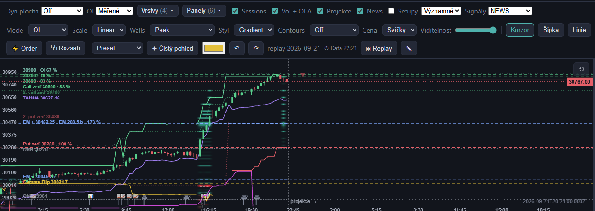
Co v datech bylo před openem
| signál | kde v aplikaci | hodnota 21. 9. 15:30 | co znamená |
|---|---|---|---|
| útes gammy z pátku | Briefing → Ranní checklist; Stats → gamma útes | ES 83 %, NQ 44 % (OPEX) | struktura, která držela cenu, zmizela — den rozsahu |
| vyšší TF trend | Briefing → Trend | týden/den rostoucí | bias LONG |
| gap-and-hold | Graf: cena vs. PDC a flip | +210 b nad pátečním settle, nad flipem, 2,5 h komprese těsně pod call zdí 30 300 | připravený průraz |
| dominance zdi | Graf: cenovka zdi („Call zeď 30300 · 18 %") | 18 % (běžně 35–56 %) | slabá zeď = průraz, ne odraz |
| mapa se hýbe | Graf: čára call zdi po openu | 30 300 → 30 450 → 30 500 → 30 650 za 60 min | momentum, ne pin — pullbacky jsou vstupy, ne důvod k fade |
Co aplikace řekla špatně (a co je od v1.18 jinak)
Ranní checklist (kartu najdeš v Briefingu nahoře)
Kde zapnout zdi: Graf → Vrstvy → Zdi (call/put čára s cenovkou a dominancí v %) a 2. zeď (tečkovaně); dropdown Walls (Peak / Smooth / Ridge) kreslí zelené pásy zdí v heatmapě. Když cena „uteče" z grafu (uživatelem přiblížený rozsah), ikona ↻ vpravo nahoře v grafu vrátí automatický rozsah.
Obrazovka je od srpna 2026 pryč: nenesla nic unikátního a navíc posílala enginu rozepsané hodnoty při psaní (bez tlačítka Uložit). Kde co najdeš teď:
Formulář se vyplní, zkontroluje a odešle tlačítkem Uložit — rozepsaná hodnota se do enginu nedostane (dřív se ukládalo po každé klávese, což při psaní „150" poslalo do enginu i „1" a „15"). Výjimkou je téma Dark/Light, které se přepne hned.
| Sekce | Položky |
|---|---|
| IBKR | Host, port (7496 live / 7497 paper; IB Gateway 4001 / 4002), client ID. Změna po Uložit platí hned — engine se přepojí do sekund i ve chvíli, kdy spojení nemá a teprve ho hledá (v1.13, #992; dřív až do 5 min). Hodnota uložená tady přebíjí .env — kdo mění port v .env, musí ho změnit i tady (viz ADMIN-MANUAL) |
| Engine (IBKR pipeline) | Rozsah strikes (± body od spotu) — engine si změnu přebere do 5 minut za běhu a rozšíří sbírané pásmo (max 400; vidět vzdálená křídla à la pojistky hluboko OTM), velikost dávky subskripcí, retence dat (dny), disk limit (GB). Šířka hot zóny zmizela (v1.14, #1006) — přepínač nic neřídil |
| Stav enginu | Read-only stav: spojení + port (při výpadku IBKR i „bez spojení X min", #770), účet (paper), Zdroj dat (v1.13, #950: řetěz ibkr · spot ibkr, při fallbacku upozornění, že běží tastytrade), řádek IBKR se stavovým tlačítkem (v1.16, #1108: zelené Připojeno · IBKR, oranžové Přepojuji… zamčené do odpovědi enginu, červené Odpojeno — přepojit; stav je podle enginu, ne podle kliknutí, zelená i červená jsou klikatelné) + co provider dodává a badge aktivního zdroje řetězu/spotu (u druhého „záloha“) + čas posledního požadavku, řádek Cum Δ (v1.14, #615: zdroj znaménka midpoint, od mechaniky v6 aggressor — znaménko jen z tisků se stranou od burzy, minuta bez tisků je mezera, ADR-0057; per symbol podíl objemu, který v dnešním dni přišel z tisků se stranou od burzy, a v závorce týž podíl z celého přírůstku objemu včetně struktury — pravdivý ukazatel pokrytí místo dřívější „šířky hot zóny“; „—“ = podíl se neměří, např. bez spárovaného objemu za fallbacku řetězu, #1632; zdroj určuje mechanika enginu, v Settings se nepřepíná), Greeks X/Y + repair fronta, OI řetězu, lines %, chyby subskripce (v1.10: za hodinu · od startu · rozbalovací výpis posledních záznamů; půlnoční náraz resubskripce nové seance je označen „přechod seance" a alert nespouští), křížová kontrola feedů + sbalený log událostí prohlížeče (náhrada zrušené IBKR Console) |
| Tastytrade (v1.10) | Read-only blok pod stavem enginu — DXLink spojení + reconnecty + čas posledního eventu, počet subskripcí s pokrytím quotes/greeks/OI, řádek tastytrade se stavovým tlačítkem a badgem zdroje (v1.16, #1108; obě větve běží záměrně souběžně — IBKR primární, tastytrade OI fill, tisky, extended expirace a záloha řetězu/spotu), trade printy (přijaté a zaznamenané do učicích dat). Blok se ukazuje, jen když větev běží |
| Alerty | Hlásit chyby subskripce market dat — zapnuto; vypni, pokud ti hlášky o odmítnutých kontraktech nevyhovují (viz alert Chyba subskripce v kap. 14) |
| Trading | Traders mode — přepínač trading vrstev (viz kap. 11e); velikost účtu + riziko na obchod pro kalkulačku pozice u setup karty. Vše jen v prohlížeči, na server neodchází |
| Vzhled | Téma Dark/Light (přepne se ihned), jazyk |
| Seance | Historické pole (JSON) — markery seancí se nově generují automaticky z časů světových burz; checkbox Sessions v grafu |
Sekce Engine se týká výhradně IBKR. Velikost dávky je odvozená od limitu tvého IBKR účtu (100 market data lines — ADR-0001), rozsah strikes řídí rotační sweep přes IBKR. Tastytrade je od v1.9 plnohodnotná záloha (cena podkladu i celý řetěz při výpadku IBKR, doplňování OI) — její stav ukazuje read-only blok výše; konfigurace (OAuth tajemství) zůstává v
.enva vyžaduje restart enginu (viz ADMIN-MANUAL).
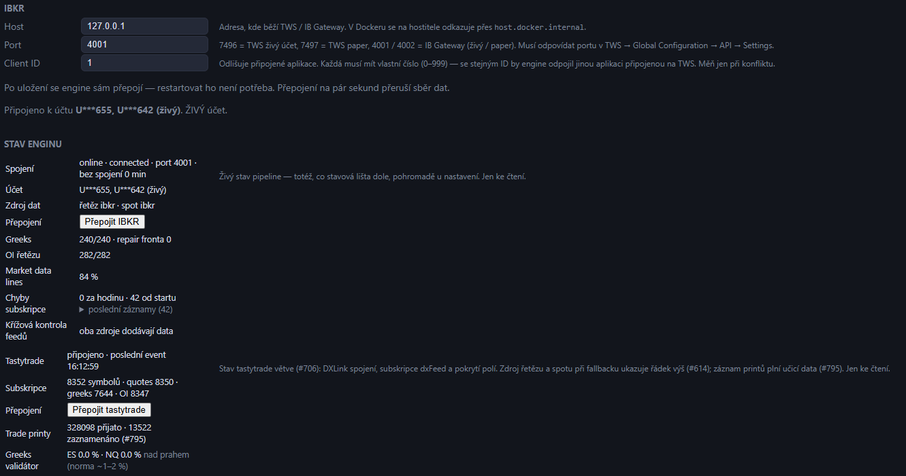
Zaseknuté spojení šlo dřív řešit jen restartem kontejneru enginu, který shodí i sběr dat. Nově jsou v Settings → Stav enginu tlačítka Přepojit IBKR a (v bloku Tastytrade) Přepojit tastytrade:
tasty,
IBKR data nedodává a přepojení IBKR je na místě; když je vše ibkr a graf
přesto stojí, zkus nejdřív tastytrade.Stavová tlačítka (v1.16, #1108). Tlačítka mají barvu a text podle toho, co hlásí engine — ne podle toho, na co jsi klikl:
Vedle tlačítka je, co provider právě dodává: řetěz ✔ aktivní / záloha a spot ✔ aktivní / záloha podle skutečného zdroje (fallback #614), u IBKR navíc bary a OI archiv, u tastytrade OI fill, tisky (Cum Δ), extended expirace a ad-hoc pohledy. Obě spojení běží záměrně souběžně — tlačítka nevybírají zdroj dat, jen obnovují spojení. Bez rozepsané hlášky ukazuje řádek čas posledního požadavku (přežije refresh, razítkuje ho server).
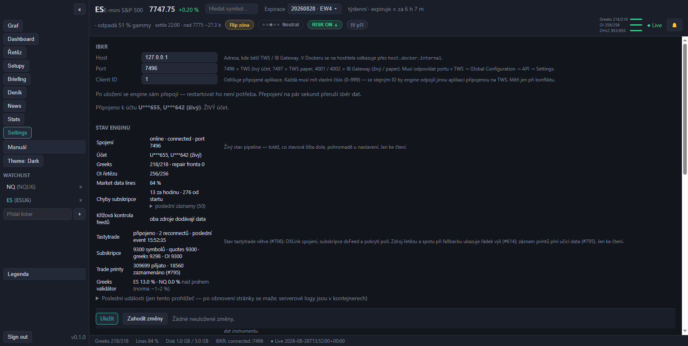
Light téma:
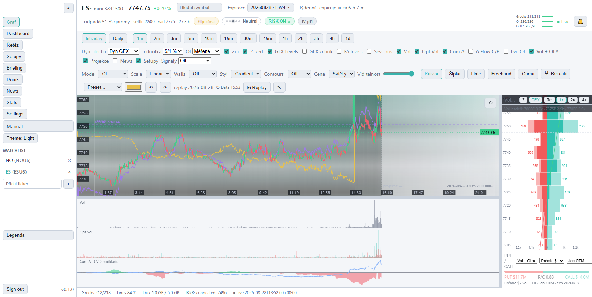
GEXLENS_API_TOKEN z .env. Potřebuje ho
tlačítko zálohy (bez něj server vrátí 401). Ukládá se jen v prohlížeči,
na server neodchází.scripts/backup-postgres.ps1.Zvonek v hlavičce ukazuje badge s počtem nepřečtených alertů; kliknutím otevřeš historii (otevření badge vynuluje). Alerty chodí i za běhu do IBKR Console logu.
Push na Telegram (v1.18, #1175; přepínače per druh #1284): totéž, co zvoní ve zvonku, může chodit i na mobil přes Telegram bota — jedna fronta, dva výstupy, žádná jiná logika. Zvonek dostává vždy všechno, nastavení níže platí jen pro Telegram. V Settings → Notifikace (Telegram):
Co přesně přepínač posílá, ukáže tooltip (najeď myší na název): popis, druhy ze zvonku, které pod něj patří, jestli chodí i v tichých hodinách a výchozí stav. Přepínač se uloží hned po kliknutí; když ho server odmítne, ukáže se chyba a přepínač zůstane, jak byl. Kdo měl dřív vypnutou kategorii (např. „Zprávy"), má vypnuté i její nové přepínače, dokud je sám nezapne — nic se samo nezapne ani nevypne. Noční údržba selhala posílá skript mimo Docker (kompaktace VHDX, rollback deploye): do zvonku nejde, protože API v tu chvíli může stát, a při vypnutém Telegramu zůstane jen v logu skriptu.
Tiché hodiny 23:00–06:00 (lokálně): provozní přepínače (ve výchozím stavu zapnuté
v Chování aplikace a Setup detektor prodělává) chodí i v nich, ostatní ne —
s jedinou výjimkou Zprávy před otevřením po víkendu: aktualizace 15 minut
před nedělním otevřením padá na 23:45 a ráno by už nebyla k ničemu.
Duplicitní alert do 10 min se neposílá, denní strop 200. Nastavení bota
(přihlašovací údaje, chat id) dělá správce v .env — bez něj Settings ukážou
„Telegram bot není nastaven". Když se přihlásíš na mobilu k IBKR, engine
jede z tastytrade. Do mechaniky v6 CumΔ stojí: setupy s potvrzením tokem (T1,
T4 a kontra-režim T2) nevznikají, ostatní setupy a zprávy chodí dál. Od v6
běží CumΔ dál z tisků tastytrade a tyto setupy stojí jen při mezeře tisků
(ADR-0057). Provozní alert o přetažení dostaneš v obou případech.
Zvonek je globální — sbírá alerty napříč všemi instrumenty ve watchlistu, ne jen z toho na grafu. Proto je u každého alertu datum + čas notifikace a symbol instrumentu (např. [NQ · setup]). Naproti tomu karty a linie setupů přímo v grafu jsou jen pro instrument, který máš zobrazený. Víceřádková upozornění (reakce trhu na zprávy, zprávy před otevřením) se ve zvonku zobrazí po řádcích jako na Telegramu.
Proklik na zprávy (v1.21, #1290): upozornění Reakce trhu na zprávy, Zprávy před otevřením a Očekávaný pohyb před releasem (#1296) jsou ve zvonku klikací („Otevřít zprávy v grafu"). Klik přepne graf na instrument upozornění, zapne vrstvu News a otevře dialog se zprávami upozornění (s datem, když leží mimo zobrazený den). U reakce trhu navíc jednou posune graf tak, aby začátek shluku byl uprostřed (zoom i cenová osa zůstávají) — marker tam najdeš spolu s ostatními zprávami toho sloupce, i s filtrem Významné: zprávy upozornění projdou filtrem vždy, i když podle dnešní definice významné nejsou (upozornění z doby před zpřesněním klasifikace). Po návratu na graf z jiné obrazovky se pohled znovu neposouvá. U souhrnu před otevřením se graf neposouvá: víkendové zprávy na ose seance neleží. U upozornění před releasem se graf posune na release jen při kliku po releasu; klik před releasem otevře jen dialog se zprávami releasu (odhad, předchozí hodnota) a graf se ani později, v minutě releasu, sám neposune — pohled, který si mezitím nastavíš, zůstane. Zvonek drží upozornění jen v paměti stránky (posledních 50), po obnovení stránky je prázdný; z Telegramu vede k zprávě jen čas v textu upozornění („Reakce ES na zprávy z 13:00").
Druhy alertů (sloupec Telegram = přepínač v Settings → Notifikace a jeho výchozí stav; úplný popis ukážou tooltipy přepínačů):
| Alert | Kdy | Telegram |
|---|---|---|
| Cena u úrovně | Cena se přiblíží k flipu / call zdi / put zdi na ≤ 1 krok striků (ES ±5 b). Anti-spam: úroveň po vystřelení mlčí 15 min a znovu hlásí až poté, co cena od úrovně odešla (2× práh) — konsolidace u zdi tak pípne jednou, ne každou minutu | Cena u GEX úrovně (vyp.) |
| Výpadek spojení | TWS/Gateway nedostupné — hlásí se při přechodu do odpojeného stavu (od v1.13 se skutečně vyhodnocuje, #949; dřív byl alert mrtvý kód). Trvá-li výpadek přes 5 min, přijde navíc „IBKR spojení chybí už X min — sběr dat stojí", nebo „IBKR nedostupné už X min — data jedou ze zálohy tastytrade", když data sbírá záloha; připomene se po 15 min, po 1 h a pak jednou za 4 h, po obnovení přijde „IBKR spojení je zpět" (v1.31, #1317; dřív à 5 min, #770); stejná doba je v Settings → Stav enginu jako „bez spojení X min" | Výpadek spojení s IBKR (zap.) |
| Disk limit | Obsazení dat překročilo limit ze Settings → Engine (hranově, jednou za překročení, #949). Nezaměňovat s alertem disk_space (volné místo disku pod 15 / 5 GB + výpis největších tabulek) | Dochází místo na disku (zap.) |
| OI nedorazilo | IBKR nedodalo Open Interest — GEX vrstvy jedou dočasně z volume (viz Řešení potíží) | Chybí OI (zap.) |
| Instrument nejde spustit | Ticker z watchlistu není futures s opčním řetězem (např. akcie) — engine to zkusí znovu za 30 minut | Instrument nejde spustit (zap.) |
| Obálka na stropu | Pásmo strikes dosáhlo maxima šířky — vzdálený okraj se posouvá za cenou | Diagnostika modelu (vyp.) |
| Svíčky se přestaly kreslit | Real-time bary z TWS nechodí při otevřeném trhu (mrtvé TWS farmy po noční přestávce) — i když stojí i cena, to je zamrzlý stream (v1.31, #1347); pomáhá restart TWS, díra se po návratu doplní sama | Svíčky nechodí (vyp.) |
| Svíčky zase jedou | Bary se vrátily — díra ve svíčkách se doplní backfillem | Svíčky nechodí (vyp.) |
| Feed zpráv nefunguje | Jeden RSS feed zpráv (Fed, Yahoo, CNBC, MarketWatch, Reddit, vlastní feed) selhává bez přerušení déle než hodinu — zrušená adresa, chyba serveru nebo nečitelná odpověď. Ostatní feedy chodí dál, ale zprávy z tohoto chybí a zpětně se nedoplní. Hlásí se jednou za výpadek, i o víkendu, protože zprávy vycházejí pořád (v1.31, #1451) | Feed zpráv nefunguje (zap.) |
| Feed zpráv zase odpovídá | První úspěšné stažení po ohlášeném výpadku, s jeho délkou | Feed zpráv nefunguje (zap.) |
| Vol koncentrace | Jedna strana (strike × C/P) příští expirace výrazně převyšuje zbytek (≥ 3× medián top 10) — úroveň, kde se trh zajišťuje na zítřek (put pod trhem pojistka/magnet, call nad trhem strop). Při zavřeném trhu (víkend, denní pauza) se nehlásí: objem je zmrzlý z poslední seance (#1309) | Koncentrace opčního objemu (zap.) |
| Nový setup | Detektor našel obchodní setup (odraz od zdi / neúspěšný průraz / Max Pain pin / gamma momentum / divergenční spring). Od v1.27 nese šablonu s číslem (T7 trend_continuation), stádium buňky (AUTO / STÍN / ZKOUŠKA 3/10 s čerpáním) a druhý řádek s ØR hrubě a čistě, n / n potřebné a verdiktem brány — se štítkem edge neprokázán:, když dolní mez ØR není kladná, jinak Důkaz:. Na Telegram jen obchodovatelný setup | Nový setup (zap.) |
Konec zkoušky setupu (setup_stage, v1.27) |
Zkouška buňky v Knihovně vyčerpala rozpočet (počet setupů nebo ztrátu v R) a buňka je zpět na Auto — rozhoduje brána. Jednou na zkoušku; ve zvonku je klikací a otevře Setupy → Knihovna, kde jde zkouška obnovit (kap. 18) | Konec zkoušky setupu (zap.) |
| FA validace | Kalibrační bod FA vrstvy: po finálním OI archivu dne (dvě shodná čtení po publikaci CME) engine porovná klasifikovaný volume posledního obchodního dne s ΔOI na stranách změřených po publikaci v obou dnech (dnešní strana jen z IBKR měření po dnešní publikaci, předchozí z IBKR nebo z tasty řádku obnoveného po publikaci toho dne; open-ratio ≈ α, korelace), a bod uloží pro kalibraci — čistě informační. Strany bez takového měření se nepočítají (#1314, #1605). Jen v obchodní den; v pondělí páteční volume proti ΔOI pátek → pondělí (#1309) | Diagnostika modelu (vyp.) |
| Greeks se zasekly / zase jedou | Kotace opčního řetězu přestaly chodit při živém spotu (obdoba svíček) — hint restart TWS; návrat se ohlásí. Po settle expirující řady se nehlásí (v1.13, #959): vypořádaný řetěz se přestane kotovat, což je normální stav, ne porucha — dřív alert s radou „restart TWS" chodil každý den po 22:00 | Neúplná data opcí (zap.) / Data opcí zase chodí (vyp.) |
| Chyba subskripce | TWS opakovaně odmítla data konkrétních kontraktů (error 354 „not subscribed"); alert vypíše, o které kontrakty jde. Ojedinělé výskyty se nehlásí — ty patří ke krátkým výpadkům farem a data se vrátí sama. Když alert přijde, zkontroluj subskripce v Market Data Subscription Manager. Jde vypnout v Settings → Alerty | IBKR odmítá market data (zap.) |
| Konkurenční relace | Stejný IBKR účet je přihlášený jinde (mobilní aplikace, Client Portal, druhá TWS) a přetahuje si market data. IBKR povoluje jen jednu aktivní market-data relaci na subskripci, takže data můžou vypadávat — pomůže odhlásit účet z ostatních míst. Sdílení dat s paper účtem tohle neřeší: sdílí se oprávnění, ne kapacita relace | IBKR přihlášen jinde (zap.) |
| Setup detektor prodělává / se zotavil | Denní sebekontrola: setupy symbolu za sledované okno prodělávají — alert doporučí vypnout nejhorší šablonu (GEXLENS_SETUP_DISABLED_TEMPLATES) nebo upravit prahy; „zotavil“ = výkonnost se vrátila nad práh |
Setup detektor prodělává (zap.) / se zotavil (vyp.) |
| T6 kandidát | Ráno po výprodeji (close −1 % a hůř) nastala konstelace premarket squeeze (kap. 18) — zatím se jen sbírá, šablona vznikne po ~5 výskytech. Jen v obchodní den s US openem (o víkendu a svátku NYSE ne) | Kandidát vzorce T6 (vyp.) |
| Drift hlídka | Čerstvá úspěšnost signálového bucketu se statisticky rozešla s historickou — model přestává platit, signály z něj ber s rezervou (detail na Stats) | Drift vzorců (vyp.) |
Reakce trhu na zprávy (news_anomaly) |
Trh se do 5 min po shluku zpráv s aspoň jednou významnou zprávou pohnul mimořádně — nad 97 % výchylek v tuto denní dobu i po zohlednění volatility poslední hodiny. Jedno upozornění na shluk a instrument, ES a NQ zvlášť (viz níže) | Reakce trhu na zprávu (zap.) |
Očekávaný pohyb před releasem (release_preview) |
60 a 15 min před CPI, NFP, FOMC, PPI, PCE, Retail Sales a ISM Services: typická výchylka ES a NQ za 15 min po releasu, přepočtená na dnešní volatilitu, a úrovně v jejím dosahu; směr jen u jádra inflace jako hypotéza „ověřuje se“ (viz níže) | Očekávaný pohyb před releasem (zap.) |
Zprávy před otevřením po víkendu (news_preopen) |
V neděli 4 h před otevřením Globexu (20:00) souhrn zásadních zpráv za víkend se směrem, sklonem a úrovněmi poslední seance, 15 min před otevřením (23:45) aktualizace jen s novou zásadní zprávou; ES a NQ zvlášť, jen když nějaká zásadní vyšla (viz níže) | Zprávy před otevřením po víkendu (zap., i v tichých hodinách) |
Pohyb trhu ze stejné chvíle nejde přisoudit jedné zprávě: v běžné minutě vyjde několik titulků a většina je šum. Aplikace proto hodnotí shluk zpráv a ohlásí ho jen tehdy, když v něm je aspoň jedna významná zpráva a trh se zároveň pohnul mimořádně. Mimořádný pohyb bez významné zprávy se neohlašuje.
Text upozornění:
Reakce ES na zprávy z 20:00: ↓ -19 bp za 5 min (97 % výchylek v tuto denní dobu do 9 bp)
• USD Federal Funds Rate
• USD FOMC Statement
• …
další významné: 4 · ostatní zprávy: 27
Čas je začátek shluku (lokálně), bp je výchylka se směrem, v závorce hranice obvyklé výchylky v tuto denní dobu. Vypíše se nejvýš 5 významných zpráv (kalendář High, Medium, pak podle důležitosti); zbytek jen počtem. Žádná pravděpodobnost se nepočítá — číslo v závorce je naměřené rozdělení z posledních 20 seancí.
Zprávy za zavřený trh: zprávy z víkendu nebo denní pauzy (a z posledních 5 minut před zavřením) se jednotlivě neohlašují — gap na otevření je součet všeho, co se za zavřený trh stalo, a jedné zprávě ho přisoudit nejde. Na víkend se ale dá připravit: před nedělním otevřením přijde upozornění na každý instrument zvlášť, jen když za zavřený trh vyšla aspoň jedna zásadní zpráva:
Časy se počítají od otevření Globexu v Chicagu (neděle 17:00 CT), ne jako pevné hodiny: poslední říjnový týden, kdy Evropa už přešla na zimní čas a USA ještě ne, přijde souhrn v 19:00 a aktualizace ve 22:45. Denní pauza (1 h) se nehlásí.
Před otevřením ES: Globex otevře v pondělí 00:00 (za 4 h)
Úrovně ES z poslední seance (expirace 21. 9.): call zeď 7730 · put zeď 7680 · flip 7752 · těžiště 7715 · close 7725
Zásadní zprávy za zavřený trh od pátku 22:55: 21 · sklon 🔴 (🟢 1 · 🔴 9 · ⚪ 11)
• 🔴 North Korea fires missile off east coast, Yonhap says
• …
další zásadní: 16 · další významné: 11 · ostatní zprávy: 1910
Před velkým ohlášeným releasem (ekonomický kalendář, dopad High) přijde 60 a 15 minut předem upozornění na každý instrument zvlášť. Říká, jak velký pohyb po takovém releasu čekat a které úrovně leží v jeho dosahu — ne kam trh půjde.
CPI za 60 min (14:30) — ES 7805.5
Vyjde: Core CPI m/m (odhad 0.3%), CPI m/m, Core CPI y/y, CPI y/y
Očekávaná výchylka do 15 min: 30–36 bodů (38–46 bp)
medián–p75 z 23 CPI · volatilita 0.94× obvyklé (bez přepočtu 39–56 bp)
V dosahu 7769–7842: call zeď 7810 (+4.5) · těžiště 7800 (-5.5) · flip 7785 (-20.5)
Dál: put zeď 7735 (-70.5)
H1 – OVĚŘUJE SE: jádro inflace teplejší než odhad → historicky za 15 min níž ve 13 ze 14 (živě 0 z 0)
Směr jinak bez prokazatelného efektu.
Co upozornění říká:
Co upozornění NEříká:
Když chybí data, text to řekne a upozornění stejně přijde: „ES cena chybí“ (bez barů posledních 15 min), „Úrovně ES chybí“, „bez přepočtu na dnešní volatilitu“ nebo „málo historie (n = …)“ (pod 8 minulými releasy rodiny). Restart aplikace upozornění nezopakuje; když aplikace v T−60 neběžela, přijde jen T−15.
Když detektor najde setup, přijde alert Nový setup a nad grafem se ukáže karta setupu pro daný instrument: směr (LONG/SHORT), šablona, datum a čas vzniku (kdy se splnily podmínky), úrovně Entry / Cíl / Stop, RRR a důvěra (od v1.16 kalibrovaná z track recordu: Wilsonova dolní mez úspěšnosti šablony v daném gamma režimu při ≥ 30 uzavřených setupech, jinak konstanta šablony — najetím na číslo zjistíš zdroj), od v1.16 štítek polohy v tlumící zóně (uvnitř pásma / přechod / mimo pásmo / bez pásma s posunem důvěry, kap. 18), plus krátké zdůvodnění. Stejné úrovně se kreslí jako linie přímo v heatmapě. Kartu skryješ křížkem (setup dál běží). Historii, úspěšnost a hodnocení 👍/👎 najdeš na obrazovce Setupy v sidebaru.
Přehled a Knihovna (v1.27, #1323). Obrazovka Setupy má nahoře dvě podzáložky. Přehled je dosavadní obrazovka zobrazeného instrumentu (souhrn, účet, dnešní seance, tabulka setupů). Knihovna ukazuje všechny tickery watchlistu najednou po buňkách šablona × ticker a nastavuje se v ní, co se smí obchodovat (stádium Auto / Stín / Zkouška, kap. 18 „Knihovna setupů“). Aplikace si pamatuje, kterou podzáložku jsi měl otevřenou.
Výsledek podle skutečné cesty ceny (v1.26, #1320). Setup se uzavírá jen podle minutových svíček v pořadí, v jakém trh šel, počínaje svíčkou po té, na jejíž ceně vznikl. Cíl nebo stop rozhodne svíčka, která úroveň zasáhla, a čas uzavření je čas té svíčky. Když svíčky chybí (výpadek dat z IBKR), setup zůstane aktivní, engine si chybějící minuty sám vyžádá zpětně z IBKR (při výpadku celého IBKR je doplní tastytrade) a pak je projde v pořadí. I když mezitím cena doběhla k cíli, rozhodne stop, který padl ve výpadku. Na každou díru čeká engine nejdéle 15 minut; minuty, které se do té doby nedoplní, přeskočí a zapíše do logu jako neověřený výsledek. Do v1.25 hodnotil při výpadku jen poslední cenu a stop ve výpadku přehlédl: 3. 9. zapsal setup NQ 1003 jako cíl +3 R místo stopu −1 R.
Timeout za cenu v settle. Setup, který do settle své expirace nezasáhl cíl ani stop, skončí za close poslední svíčky před settle (16:00 ET, tj. 22:00 našeho času) a čas uzavření je settle. Dřív se brala cena z okamžiku, kdy engine timeout zjistil (restart ve 22:50, pondělí po svátku), a výsledek se lišil o desítky bodů. Starší výsledky opraví jednorázový přepočet, až ho schválíš; přepíše i MFE/MAE a opravený setup si v databázi pamatuje původní hodnoty. Setupy, které vznikly na „zamrzlé“ ceně během výpadku (vstup, jaký trh v té minutě neměl, např. ES 1004 3. 9.), přepočet sám neopraví — rozhodneš o nich podle reportu.
Souhrn nahoře = celá historie, ne posledních 200 (v1.23, #1319). Čísla nad tabulkou počítá server ze všech setupů instrumentu aktuální mechaniky detektoru; přepínač Včetně starší mechaniky (N) přidá i starší verze. Po přepnutí zůstanou dosavadní čísla ztlumeně na místě, dokud server nepošle nový souhrn — přepínač nezmizí a stránka neposkočí. Tabulka pod nimi je jen stránka posledních 200 setupů — je-li historie delší, stojí nad ní „Tabulka ukazuje posledních 200 z 604 setupů". Do v1.22 se „celkem" omylem sčítalo jen z těch 200 řádků, takže číslo s každým novým setupem klouzalo (ES v5: obrazovka +690 $, celá historie −2 338 $ na 1 kontrakt). Když server souhrn nedodá, obrazovka ukáže chybu — z tabulky se nic nedopočítává.
Přechod na další expiraci v settle (v1.28, #1331). Setup se vztahuje
k expiraci opčního řetězu a po jejím settle už žít nemůže. Settle je
16:00 ET (22:00 našeho času; v týdnech, kdy se USA a Evropa liší v přechodu
na letní čas, o hodinu jinak). Na kvartální datum (3. pátek března, června,
září a prosince) sleduje aplikace po rollu týdenní sérii nového kontraktu
(EW3/QN3), která se vypořádá také v 16:00 ET — kvartální pátek tak zůstává
živý celou seanci (v1.31, #1366; do té doby engine končil už v 9:30 ET). Ráno
v 9:30 ET (SOQ) se vypořádá jen standardní kvartální řetěz expirujícího
kontraktu — ten aplikace sleduje, jen když máš ve watchlistu pinovaný kontrakt
(ESZ6 v prosinci). Přesně v tu chvíli engine přepne
sběr dat, setupy, sondy i tendenci na další expiraci — v pátek na pondělní.
Přechod trvá 1–2 minuty: minuta settle ještě uzavře, co k vypršelé expiraci
patří (otevřené setupy timeoutem, paper ordery, agregát mapy), a pak se
řetěz načte znovu. Graf přepne v téže chvíli sám
(v1.30, #1367), pokud expiraci vybrala aplikace; ručně zvolenou expiraci ani
zobrazenou poslední seanci s daty (banner o víkendu) nemění.
Nové setupy pak potřebují pár minut historie nad novým řetězem, než je detektory najdou — úrovně staré a nové expirace se nemíchají. Do v1.28 engine přepínal až o půlnoci UTC a do té doby běžel nad vypršelým řetězem; od v1.24 v tom okně (v létě 22:00–02:00, v zimě 22:00–01:00 našeho času) setupy nevznikaly vůbec. To okno zmizelo.
Setupy vzniklé po settle se do souhrnu nepočítají. Z doby před v1.24 jich v databázi zůstává přes 80 (mechanika v5, jeden z nich obchodovatelný s upozorněním). Každý takový řádek je v tabulce ztlumený a nese štítek po settle, mimo souhrn; tooltip štítku vysvětlí proč. Přepínač Jen obchodovatelné v tabulce je skryje, takže tabulka sedí se souhrnem. Ze souhrnu, účtu, brzd, brány šablon, kalibrace confidence i kouče jsou vyřazené. Pod rozdělením se vypíše Vyřazeno ze souhrnu (vznik po settle vlastní expirace): N, takže nic nezmizí potichu. Počet u přepínače Včetně starší mechaniky (N) zahrnuje všechny řádky starších verzí, i vyřazené.
Setupy nad zamrzlým spotem se do souhrnu nepočítají (#1346). Při výpadku datového streamu stála cena a několik setupů vzniklo nad cenou, kterou trh v té minutě neměl (vstup mimo 1min bary — ES 1004, ES 1049, NQ 1048, 1184, 1203). Od opravy #1346 takové setupy nevznikají; ty starší jsou trvale označené. V tabulce jsou ztlumené se štítkem vstup mimo bary, mimo souhrn, přepínač Jen obchodovatelné v tabulce je skryje a pod rozdělením se vypíše Vyřazeno ze souhrnu (vstup mimo bary, zamrzlý spot): N. Ze souhrnu, Knihovny, účtu, brzd, brány šablon, kalibrace confidence i kouče jsou vyřazené stejně jako setupy po settle; v databázi zůstávají.
| Dlaždice | Co znamená |
|---|---|
| Aktivní / Uzavřené | běžící setupy / setupy s výsledkem (cíl, stop, timeout) |
| Úspěšnost | podíl uzavřených s kladným výsledkem v R (i kladný timeout) |
| Ø R / Σ R | průměrný / celkový výsledek v násobcích rizika (1 R = vzdálenost entry–stop) |
| Hrubý výsledek (1 kontrakt) | Σ (R × stop v bodech × hodnota bodu; ES 50 $, NQ 20 $) — každý setup rovným dílem jeden kontrakt, obchodovatelný i stínový |
| Poplatky | uzavřené × poplatek za kontrakt a obchod (default 10 $ v jednotkách aplikace = 1 $ reálně na mikro) |
| Čistý výsledek | hrubý výsledek − poplatky |
| EV / obchod (hrubě) | očekávaný výsledek jednoho obchodu na 1 kontrakt před poplatky (viz níže) |
Proč může být Σ R kladné a dolary záporné: R je vztažené k riziku obchodu, dolary jsou absolutní. Setup se širokým stopem (40 b ES = 2 000 $ na kontrakt) prodělá na stopu víc, než kolik vydělá několik výher s těsným stopem — proto rozhoduje řádek Účet, kde sizing (#1185) velikost pozice podle stopu srovná.
Rozdělení obchodovatelné / stínové / bez risk pravidel. Tabulka pod dlaždicemi rozdělí tentýž souhrn (pořád 1 kontrakt na setup) podle verdiktu risk pravidel:
Účet 50k — co by reálně vydělal účet (řádek se zeleným pruhem): jen obchodovatelné uzavřené setupy s kontrakty ze serverového sizingu — hrubě (kontrakty × R × stop × bod), poplatky (kontrakty × poplatek), čistě, % účtu a max drawdown (chronologicky podle uzavření). Dlaždice 1 kontrakt výše měří detektor, tenhle řádek odpovídá na otázku „kolik by vydělal účet". Reálně na MES/MNQ jsou dolary ÷ 10.
Denní statistika seance (obrazovka Setupy): nad seznamem je souhrn dnešního dne — kolik obchodů proběhlo, kolik úspěšných a kolik ztrátových, úspěšnost v %, největší ziskový a největší ztrátový obchod, od v1.12 Σ dnes hrubě — denní bilance v dolarech (na 1 kontrakt, stejná konvence jako hrubý výsledek v souhrnu: zisk zeleně, ztráta červeně), od v1.23 poplatky dnes a Účet dnes čistě (jen obchodovatelné setupy dne), kolik procent účtu se vydělalo nebo prodělalo (hrubě, 1 kontrakt) a kolik procent bylo maximálně v riziku. Řez je podle Globex seance, ne kalendářního dne, takže nedělní večer patří pondělí. První dlaždice Seance ukazuje, ke kterému obchodnímu dni čísla patří; po 17:00 CT se blok sám přenačte na novou seanci (do minuty), i když zrovna nevznikl žádný setup.
EV / obchod (Expected Value): v historickém souhrnu na Setupech a jako karta ve Stats → Výkon setupů. Vzorec: (Win Rate × Avg Win) − (Loss Rate × Avg Loss) — průměrný očekávaný výsledek na jeden obchod. EV > 0 znamená, že přístup dlouhodobě vydělává peníze; EV < 0, že dlouhodobě ztrácí. Na Setupech je EV v dolarech na 1 kontrakt, ve Stats v jednotkách R (kde je číselně totéž co Ø R) — přidaná hodnota je v rozkladu: na první pohled vidíš, jestli výsledek táhne win rate, velikost výher, nebo ho sráží velikost proher. Tooltip dlaždice i karty nese celý dosazený výpočet.
Kontra-režimový filtr: obchod proti gamma režimu (long v negativní gammě / short v pozitivní — „fade v červeném", nejčastější ztráta z kap. 18) má u odrazu od zdi a neúspěšného průrazu přísnější podmínky: musí ho potvrdit CumΔ přes delší okno (30 min), jinak setup nevznikne. A po kontra setupu uzavřeném na stop má stejná šablona 45min pauzu na další kontra pokus — brání sérii ztrát v trendovém dni. Potvrzené setupy poznáš v zdůvodnění podle „Kontra-režim potvrzen tokem".
| Údaj | Význam | V pořádku |
|---|---|---|
Greeks X/Y |
Kolik kontraktů řetězce má kompletní data (bid/ask/volume/Greeks) | X = Y |
Repair: retrying N… |
Kontrakty čekající na opakované načtení | Nezobrazuje se, nebo malé N |
Lines NN % |
Vytížení market data lines účtu | < 100 % |
Disk X / Y |
Obsazení disku daty / limit | X < Y |
IBKR: connected :7496 |
Stav spojení + port | connected |
● Live HH:MM / Stale |
Čas posledních dat | ● Live, čas se hýbe |
Aplikaci lze otevřít rovnou v konkrétním stavu pomocí URL parametrů:
http://127.0.0.1:8080/?view=dashboard # obrazovka: chart | dashboard | chain | setups | news | stats | console | settings
http://127.0.0.1:8080/?theme=light # téma
http://127.0.0.1:8080/?price=line&opacity=60 # cenová křivka s viditelností 60 % (default jsou svíčky)
Parametry lze kombinovat.
| Příznak | Příčina a řešení |
|---|---|
Stavová lišta IBKR: offline |
TWS neběží / není přihlášené / vypnuté API / špatný port. Zkontroluj TWS/Gateway, pak Settings → Stav enginu → Přepojit IBKR (kap. 13). |
| Alert „delayed market data“ | Chybí live subskripce CME v Client Portal (viz kap. 2). |
Stale místo ● Live |
Data se přestala hýbat — obvykle výpadek TWS↔IB (v TWS bývá hláška o connectivity). Vyřeší se samo, případně re-login TWS. |
| Lišta grafu ukazuje „demo data“ | API odpovědělo, že pro symbol a den data nejsou (čerstvě přidaný ticker, expirace mimo retenci). Zkontroluj, že engine je online a sbírá. |
| Lišta grafu ukazuje „bez dat“, nad grafem „API je nedostupné nebo se spouští“ | API neběží nebo se po restartu ještě spouští — graf je prázdný a aplikace to zkouší znovu každých 5 s; demo data se v tu chvíli neukazují, aby nevypadala jako skutečná (v1.31, #1355). Trvá-li to přes minutu, zkontroluj docker compose ps. |
| Alert „OI nedorazilo“ | IBKR dodává Open Interest pro ES opce jen jednou denně (ráno, po publikaci CME). Do té doby heatmapa jede z volume a GEX úrovně mohou být ploché. Engine to zkouší každých 30 minut sám — není třeba nic dělat. |
| Prázdná heatmapa | Mimo obchodní hodiny nevznikají nové snapshoty — použij playback pro přehrání posledního dne. O víkendu se od v1.13 poslední seance s daty otevře sama (kap. 4). |
| Banner „Pro … nejsou uložená data — zobrazena poslední seance …" | Pro vybranou expiraci není uložený žádný den, takže graf ukazuje jiný den, než odpovídá kalendáři (#946). O víkendu a svátku je to v pořádku; ve všední den to znamená, že sběr pro dnešek neběžel — zkontroluj TWS/Gateway a stav enginu. Ruční volba expirace banner zavře. |
| Banner „Rekonstruováno N min z dxFeed …" | Engine naběhl pozdě a chybějící minuty barů doplnil z tastytrade (kap. 6). Cena a objem za ten úsek jsou doplněné, CumΔ chybí — není to porucha, jen přiznaná díra. Křížek banner zavře. |
| Po restartu Docker Desktop nejde uložit Settings, watchlist je prázdný | Frontend držel starou adresu API a vracel 502. Od v1.13 se to spraví samo do ~10 s (#993); u staršího buildu pomůže docker compose restart frontend. |
| Změnil jsem port v Settings a engine se nepřepojil | Od v1.13 platí změna do sekund i bez spojení (#992). Pokud jsi port měnil v .env, hodnota ze Settings ho přebíjí — změň ji i tady. |
| Neděle večer: žádné svíčky | CME Globex otvírá v neděli 17:00 chicagského času = 18:00 New York = 24:00 SELČ. Do půlnoci našeho času se ES/NQ neobchodují — svíčky se objeví pár minut po otevření. (Všední dny: denní přestávka 22:00–23:00 SELČ.) |
| Symbol „zmizel" z watchlistu | Watchlist se nenačetl (např. restart služeb v nevhodný moment) — od v0.1.4 se sám obnovuje po 15 s a při návratu do okna; případné chyby přidání/odebrání ukazuje hláška pod formulářem. Stačí chvíli počkat nebo obnovit stránku. |
| Po aktualizaci aplikace nevidím nové funkce | Prohlížeč drží starý build v cache — dej Ctrl+Shift+R (hard reload). |
| TWS/Gateway spadlo po přihlášení na mobilu | Limit jednoho přihlášení IBKR. Od v1.17 aplikace jede dál z tastytrade (pipeline se založí z posledního známého řetězu, cena, zdi, OI i svíčky z tasty); po opětovném přihlášení v TWS/Gateway se sama vrátí k IBKR. |
| Přihlásil jsem se na mobilu a data stála | Market data jsou u IBKR per uživatel, takže je mobil přetáhne k sobě (error 10197) — aplikace zůstane připojená, jen jí přestanou chodit ticky. Řeší to sama: do 30 s převezme cenu a do 3 minut celý opční řetěz tastytrade a v hlavičce se rozsvítí jantarový chip; od v1.17 se od 3. minuty doplňují i svíčky (úsek označený jako doplněný) a když mobil shodí i Gateway, pipeline se založí z posledního známého řetězu a tasty (alert „degradovaný start"). Po návratu IBKR se přepne zpátky (cena po 60 s, řetěz po 5 čistých minutách). Dělat nemusíš nic. Co z tasty není: opční objem a Prémie $ ve strike profilu, panely Vol, OptVol a Delta flow — stojí do návratu IBKR. CumΔ do mechaniky v6 stojí taky, od v6 běží dál z tisků tastytrade (ADR-0057, #1632). |
| Chip „⤳ řetěz: tastytrade" v hlavičce | Běží záložní zdroj dat (viz řádek výše). Graf, heatmapa, zdi, GEX úrovně, OI i greeks jedou dál (greeks na strikech, kde je dxFeed neposílá, dopočítává BS model — v řadě zdrojů greeks jako computed). Do mechaniky v6 stojí CumΔ a net objem — tastytrade denní objem ve stejném významu nedodává a vymyslet ho by bylo horší než ho přiznat; rozjedou se samy po návratu na IBKR. Od v6 běží CumΔ a net objem dál z tisků tastytrade (ADR-0057), chybí jen rozklad objemu na tisky a zbytek bez tisku; tooltip chipu říká, který případ platí (#1632). |
| Ukazatel Greeks/OI/OHLC má pomlčku | Hodnotu teď nejde změřit — engine ji neposlal, typicky když neběží TWS nebo pár vteřin po startu. Rozdíl proti žlutému ukazateli: žlutá znamená naměřenou díru, pomlčka žádné měření. |
| Po startu počítače nic neběží | Zkontroluj, že běží TWS — po restartu Windows se nespouští sama. Engine na ni čeká minutu a pak se rozjede i bez ní (cena poteče z tastytrade), opční data ale bez TWS nevzniknou. Pipeline naskočí sama, jakmile se TWS přihlásí; restartovat aplikaci není potřeba. |
| Aplikace nejde otevřít (:8080) | docker compose up -d v adresáři projektu; první start po rebootu chvíli trvá. |
Obchodní den (Daily svíčka, denní osa, CumΔ reset) je Globex seance: od 17:00 CT předchozího dne do 17:00 CT — ne kalendářní půlnoc. Nedělní večer proto patří pondělnímu dni a restart aplikace uprostřed seance kumulativy nenuluje (dopočtou se od otevření seance).
Tahle kapitola překládá vrstvy aplikace do rozhodnutí: kdy hledat long, kdy short a kdy si sedět na rukách.
Market makeři (dealeři) drží protistranu opcí a průběžně se zajišťují futures:
Klíčové pravidlo: režim neříká směr, říká, KTERÝ TYP obchodu dnes funguje. Zelený režim = obchoduj návraty (fade od hran). Červený režim = obchoduj průrazy (momentum). Nejčastější ztráty = fade v červeném dni, honění breakoutu v zeleném.
Co režim NEříká: jak velký bude den (v1.15, #876). Změřeno na 63 seancích ES + NQ (20. 7.–4. 9. 2026): close skončil mimo pásmo expected move v 30 % dnů s negativní gammou a v 36 % dnů s pozitivní — rozdíl −6 p. b., 95% interval [−28, +16], průměrný rozsah dne 2,3× vs. 2,4× EM. Hypotéza „v červeném režimu se EM proráží častěji" se tedy nepotvrdila; pokud něco, je to naopak, a rozdíl je v mezích šumu. To, jestli EM dnes drží, říká volatilitní režim (karta Volatilita, kap. 11f): v nízké volatilitě close skončil uvnitř EM v 94 % seancí, ve zvýšené a krizové jen v 36 % — bez ohledu na barvu gamma režimu. Prakticky: režim ti vybírá typ obchodu, vol režim vybírá, jak daleko smíš cíl a stop položit. Zelený den ve zvýšené volatilitě znamená fade, ale s cílem uvnitř pásma, které dnes pravděpodobně neudrží — tedy dřívější výběr zisku, ne držení k hraně EM. A hrana EM se dotkne v 86 % seancí: dotyk sám o sobě není zpráva, teprve close mimo ano.
Settle = vypořádání expirace: u denních ES/NQ opcí 20:00 UTC (22:00 SELČ, 16:00 New York). V tu chvíli opce zaniknou a jejich gamma z trhu zmizí — model i mapa počítají právě do tohoto okamžiku.
Gamma crunch: gamma opce je největší přesně na striku a čím méně času zbývá, tím je špičatější — ráno široký kopec přes několik strikes, večer úzká jehla na jednom striku. Zajišťovací toky tak mají poslední 1–2 hodiny největší páku: cena se buď přilepí k velkému striku (pin), nebo po proražení prudce akceleruje. V Dyn GEX mapě to vidíš jako stahování barev do tenkých jasných pásů směrem doprava.
Dyn GEX je samostatná podkladová vrstva, ne mód: vybírá se v dropdownu Dyn plocha a kreslí se POD zvoleným měřeným módem (např. OI+OTM) — průhledná místa měřené mapy ukážou pole, koncentrace ho překryjí. Kontury (Contours) při zapnuté vrstvě obrysují pole.
Vedle Dyn GEX (gamma, zelená–červená) jsou v dropdownu dvě další modelované plochy:
Vždy je aktivní jen jedna plocha; barvy ploch vysvětluje i Legenda v sidebaru.
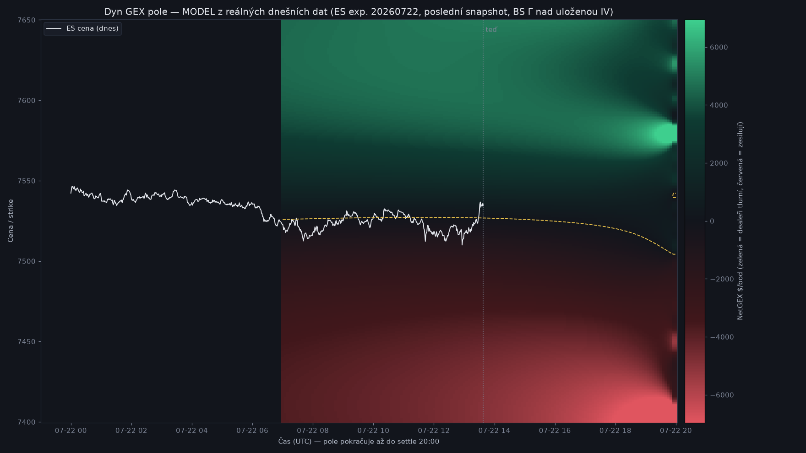
Čtyři omyly, do kterých spadne každý, kdo je zvyklý číst grafy jako křivky:
1. Zelená není cesta nejmenšího odporu — je to zóna největšího odporu. Uvnitř zeleného pásma market makeři pohyb aktivně brzdí; cena tam bývá uvězněná, ne že by tudy klouzala. Cesta nejmenšího odporu je tam, kde je mapa tmavá nebo červená. Intuice „cena se drží podél pásma" přitom není úplně mimo — silné zelené pásmo opravdu funguje jako koridor a cena v něm zůstává. Jen je to koridor z tření, ne z hladkosti: uvnitř čekej postranní pohyb a návraty ke středu, pod pásmem rychlejší, trendovější pohyb.
2. Stoupající pásmo neznamená rostoucí cenu. V projekci pásmo často stoupá doprava — není to předpověď růstu. Jak vypadávají nejbližší expirace, zbývá struktura z delších kontraktů, jejichž open interest leží výš. Je to důsledek složení trhu, ne směrová šipka. Čáry ber jako hranice režimu, ne jako trajektorii.
3. Dvě kontury čti jako polohu vůči pásmu:
| Kde je cena | Co to znamená |
|---|---|
| nad oběma čarami | uvnitř tlumící zóny — výkyvy se zaplácnou, spíš postranní pohyb |
| mezi čarami | přechodové pásmo, tlumení slábne |
| pod oběma | mimo zónu — brzdy jsou pryč, pohyb se rozjede snáz |
Vzdálenost čar = ostrost přechodu (blízko u sebe = „pustí to najednou"). Speciální případ: leží-li obě kontury nad cenou, není to koridor, ve kterém jsi — je to strop nad hlavou, na kterém by se případná rally zpomalila.
4. Budoucnost je spočítaná ze zmrazeného dneška. Projekce předpokládá, že open interest i volatilita zůstanou dnešní a mění se jen zbývající čas. To v realitě neplatí — čím dál doprava, tím spekulativnější (pár dní solidní, za měsíc náčrt). Ostré útesy u expirací jsou spolehlivější než absolutní čísla: že po expiraci struktura zmizí, je jistota daná kalendářem; přesná síla pásma je odhad.
Jednotka ($/bod vs. $/1 %). Engine počítá a ukládá vždycky jen surové $/bod; přepínač Jednotka v řádku přepínačů je čistě zobrazovací a objeví se jen s plochou Dyn GEX. Dyn Charm a Dyn Vanna mají pevnou jednotku dolarové delty (#1401): charm = kolik $ delty dealerům přibude nebo ubude za den jen plynutím času, vanna = kolik $ delty přibude nebo ubude při změně IV o 1 bod. Obojí je hodnota enginu × cena hladiny P. Váha P²/100 z $/1 % by u nich nedávala smysl, protože nejde o pohyb ceny (dřív ukazovala na ES ~79× víc).
| Jednotka | Jak ji číst |
|---|---|
| $/bod | kolik dolarů gamma expozice připadá na 1 bod pohybu podkladu — surová, mechanická veličina |
| $/1 % (výchozí) | kolik dolarů podkladu musí dealeři přeobchodovat při pohybu o 1 % |
Převod není dělení stem, ale váha P²/100, kde P je cena dané cenové hladiny (ne spot). Dvě P v tom jsou proto, že 1 % je P/100 bodů (první P) a delta se ještě převádí z kusů na dolary notional (druhé P). Vyšší hladiny tak mají přirozeně větší váhu. $/1 % je výchozí, protože je srovnatelná napříč cenovými hladinami i napříč dny s různou úrovní indexu.
Obě varianty ukazují tutéž strukturu, liší se jen důrazem — znaménka ani poloha flipu se přepnutím nemění.
Co přepínač NEovlivňuje: zdi, GEX levels, flip a setupy. Ty se počítají z měřeného pole a zůstávají v původních jednotkách. Přepínač působí na plochu Dyn GEX a na GEX křivku ve strike profilu; Dyn Charm a Vanna mají pevnou dolarovou deltu.
Nezaměň s druhým „Jednotkou". Pod strike profilem dole je vlastní přepínač Jednotka P/C poměru (kontrakty / prémie / notional, kap. 7) — jiná věc, jen shodou okolností stejné slovo. Přepínač jednotek Dyn GEX je jediný a je nahoře v liště přepínačů.
Postup čtení odshora dolů:
V Daily pohledu se zapnutou plochou Dyn GEX pokračuje osa přes budoucí obchodní dny (přepínač Projekce dnů: settle / +1 den / týden):
mechanics_version) — po změně mechaniky
se staré setupy nemíchají do statistik nových.Kalibrace nad 985 uzavřenými setupy (#575) ukázala, že kde vůči tlumící zóně Dyn GEX setup vzniká, odděluje expektanci: uvnitř pásma Ø +0,21 R (úspěšnost 37 %), mimo pásmo −0,24 R (27 %), bez pásma −0,15 R. Hloubka polohy je přenositelná mezi ES a NQ — na rozdíl od bodových prahů i ATR.
Poloha se měří hloubkou band_depth v místě entry: −1 profil na ceně
nulový (bez pásma) · 0 hrana All · 1 hrana Major · 2 vrchol profilu.
Z ní vzniká štítek na kartě setupu a ve sloupci Pásmo obrazovky Setupy:
| Štítek | Hloubka | Posun důvěry | Čtení |
|---|---|---|---|
| uvnitř pásma | (1, 2] | +10 | entry nad hranou Major — hedging cenu tlumí, fade šablony tu historicky fungují |
| přechod | (0, 1] | ±0 | mezi hranami All a Major — nerozhodnuto, sleduje se s gamma režimem |
| mimo pásmo | (−1, 0] | −15 | pod hranou All — tlumení slabé, setupy tu ztrácely |
| bez pásma | −1 | −15 | profil bez tlumící zóny (čistě negativní gamma) — nejsilnější podoba „mimo" |
Co se NEděje: žádný setup se neblokuje a žádná šablona se nevyřazuje (rozhodnutí 7. 9. 2026 — tvrdá brána zamítnuta, dokud efekt nepotvrdí jednotná mechanika v5; ve v5 zatím vidět není, n = 278). Důvěra je jediné, co se posune; základ šablony zůstává v kontextu setupu a v tooltipu štítku.
Stínová brána. K setupu se zapisuje, co by udělala dvě kandidátní pravidla — tooltip štítku je ukazuje, obrazovka Setupy má pro ně dlaždice se žlutým pruhem (počet uzavřených · Ø R per skupina):
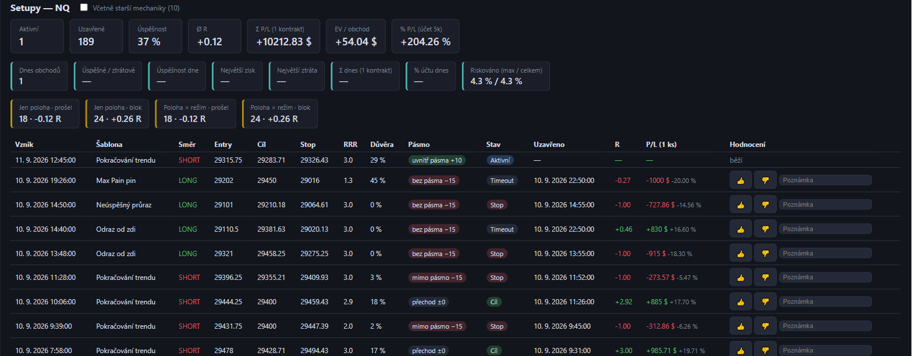
Vyhodnocení ~5. 10. 2026 na mechanice v5 se třemi síty proti šumu (min. 100 setupů v nejmenší skupině, Wilsonova dolní mez rozdílu nad nulou, permutační test interakce poloha × režim). Předregistrovaná předpověď: skupina „block" je horší o ≥ 0,2 R než „pass". Potvrdí-li se, zapne se jedno z pravidel naostro (per šablona, bez max_pain_pin — ten měl mimo pásmo kladnou expektanci); jinak zůstane hloubka jen posunem důvěry.
Účet se v aplikaci vede v jednotkách plného kontraktu (ES 50 $/b, NQ 20 $/b) jako 50 000 $. Ty obchoduješ MES/MNQ (1/10 plného kontraktu): reálných 5 000 $ ≡ 50 000 $ v aplikaci, 1 kontrakt v aplikaci = 1 mikro reálně, body sedí 1:1, dolary jsou ×10 (reálně ÷ 10). Rozhodnutí z 15. 9. 2026 po analýze 1 128 setupů: 71 z nich ztratilo přes 1 000 $ na plný kontrakt — všechny kvůli stopu ≥ 32 b ES / ≥ 73 b NQ, a setupy s velkým stopem byly zároveň nejhorší obchody (v5: −0,34 R vs. +0,06 R se stopem v rozpočtu).
Pravidla, která engine počítá u každého setupu (Settings → Risk management):
| Pravidlo | Default | Co dělá |
|---|---|---|
| Riziko na setup | 1 % = 500 $ (50 $ reálně) | kontrakty = ⌊rozpočet / (stop b × hodnota bodu)⌋ → 1 kontrakt při stopu ≤ 10 b ES / ≤ 25 b NQ; těsnější stop = víc kontraktů (ES 4 b → 2 ks) |
| Tvrdý strop | 2 % = 1 000 $ | ztráta jednoho setupu nikdy nad 2 % účtu, i kdyby se riziko zvedlo |
| Denní brzda | −3 R | po realizované ztrátě −3 R za seanci (obchodovatelné setupy, ES i NQ) nové setupy jen stínově do konce seance (17:00 CT), každý den včetně pátku — ne do settle; alert do zvonku a pushe |
| Týdenní brzda | −6 R | totéž za obchodní týden: počítá se od otevření pondělní seance (neděle 17:00 CT) a stín platí do konce obchodního týdne (neděle 17:00 CT) |
| Strop stopů šablony | 2 / den | třetí pokus téže šablony po dvou stopech za seanci je stín, až do konce seance (17:00 CT) |
| Brána šablon | zapnuta, n ≥ 30, okno 60 seancí | obchodovatelná je jen šablona na daném symbolu, jejíž dolní mez očekávání (jednostranný 95% interval Ø R ze setupů téhož symbolu se stopem v rozpočtu) je kladná; ES a NQ se hodnotí zvlášť; ostatní se dál měří, ale neobchodují |
| Zkouška — výchozí rozpočet (v1.27) | 10 setupů / −3 R | předvyplní dialog Zkoušky v Setupy → Knihovna (meze 1–20 setupů a 0,5–6 R); běžící zkoušky si nesou rozpočet ze zahájení |
Stín vs. obchodovatelný. Setup vzniká vždy (měření nesmí přestat —
právě velké stopy chceme dál vidět), ale nese verdikt: sloupec Účet v
obrazovce Setupy ukazuje 1 ks · 400 $ (kontrakty · ztráta na stopu) u
obchodovatelného, nebo stín: stop nad rozpočtem rizika / denní brzda /
šablona bez prokázaného edge u stínu. Stínový řádek je ztlumený, nechodí
do pushe a nevstupuje do bilance účtu; přepínač Jen obchodovatelné v
tabulce ho z tabulky schová (souhrn nahoře ukazuje rozdělení vždy). Tooltip štítku nese rozpočet, stop v bodech, verdikt brány (n, dolní
mez) a stav brzd (dnes / týden v R). U setupů vzniklých před v1.24 je „týden“
součet za 84 dní, ne za obchodní týden: týdenní brzda omylem sčítala celé okno
brány šablon (#1322). Stav v době vzniku se zpětně nepřepisuje.
Brána po symbolech (v1.25, #1325). Brána hodnotí každou dvojici šablona ×
symbol zvlášť: trend_continuation na ES má svůj verdikt a na NQ jiný. ES a NQ se
u téže šablony chovají jinak (jiný typický stop i dopad skluzu), takže edge musí
prokázat každý symbol sám; starší setupy se dopočítají hodnotou bodu vlastního
symbolu. Do v1.24 brána omylem míchala setupy obou symbolů a každý symbol ji
počítal nad jiným vzorkem. Tutéž šablonu proto mohla ve stejnou chvíli pustit na
NQ a zablokovat na ES a verdikt NQ přeskakoval i několikrát za hodinu. Setupy
vzniklé před v1.25 nesou verdikt podle staré logiky a zpětně se nepřepisují.
Symbolem se myslí ticker z watchlistu: pinovaný kontrakt (např. ESZ6, viz
„Pinovaný kontrakt ve watchlistu“ níže) má vlastní vzorek, nepřebírá ho od
ES a začíná od nuly. Než nasbírá 30 vlastních uzavřených setupů šablony,
jsou všechny jeho setupy stínové, a protože pinovaný kontrakt obvykle žije jen
roll týden, zůstane v praxi stínový celý.
Co to znamená: k 30. 9. 2026 nemá žádná šablona kladnou dolní mez na žádném
symbolu (trend_continuation je v bloku na ES i NQ, ostatní šablony nemají 30
vzorků), takže nové setupy jsou stínové: nechodí z nich push a bilance účtu
stojí. Od v1.27 jde bránu pro vybranou buňku šablona × ticker vědomě přebít
Zkouškou s rozpočtem v Setupy → Knihovna (níže); sizing a brzdy platí dál.
Zaškrtávátko Brána šablon v Settings zmizelo — vypnout bránu celou by byla
druhá cesta k obchodování všeho bez rozpočtu (zůstalo jen jako nouzová cesta přes
API). Kritérium brány se nemění; přehodnotí se kolem 28. 10. na datech od 30. 9.
(připomínka #1334).
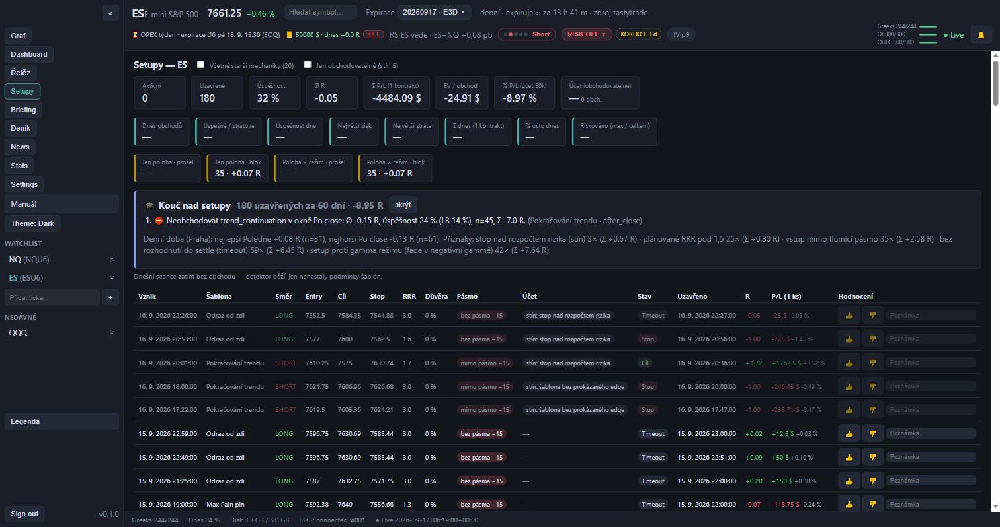
Bilance účtu. Řádek Účet 50k v Setupech a karta Účet 50k ve Stats → Výkon setupů: Σ (kontrakty × R × stop × bod − poplatky), počet obchodů, počet stínů, poplatky a max drawdown v $ — od v1.23 z celé historie (#1319). Poplatek je default 10 $ za kontrakt a obchod v jednotkách aplikace (= 1 $ reálně). Vedle toho zůstává USD simulace (#679) podle kalkulačky (Settings → Trading) — ta počítá s tvým reálným účtem a mikro kontrakty.
Co to (ne)slibuje. Pravidla zaručují, že účet přežije sérii ztrát (1 %: max drawdown ~19 % v simulaci nad v5; 2 %: ~39 %) a že ztráta přes 1 000 $ v aplikaci (100 $ reálně) je z definice nemožná. Nezaručují zisk — edge mechaniky v5 je dnes ≈ 0 R, proto brána šablon zpočátku většinu setupů označí za stín. Živé obchodování má smysl až po ~60 seancích, kdy bilance obchodovatelných setupů drží nad nulou. Přepnutí na 2 % až po ≥ 50 živých obchodech s edge ≥ +0,2 R. Zvětšovat stop kvůli sizingu je špatně — stop se nezvětšuje, zpřesňuje se vstup.
Změna parametrů. Settings → Risk management: každé uložení založí novou verzi parametrů setupů s povinným důvodem (audit), engine ji převezme do sekund; už vzniklé setupy si nesou hodnoty, se kterými vznikly. Od v1.27 bez důvodu (aspoň 3 znaky) tlačítko uložit nejde — dřív se místo chybějícího důvodu zapsal náhradní text. Stádium jednotlivých šablon (Stín, Zkouška) se v Settings nemění, patří do Setupy → Knihovna.
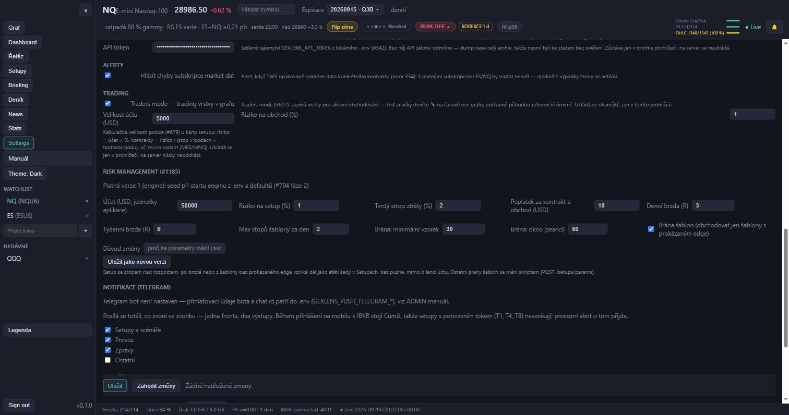
Brána šablon rozhoduje za tebe, a dnes říká „ne“ všem buňkám. Knihovna
(Setupy → podzáložka Knihovna) je místo, kde rozhoduješ ty — vedle čísel, ze
kterých se rozhoduje. Jednotkou je buňka šablona × ticker: trend_continuation
na NQ je jiná buňka než na ES, a pinovaný kontrakt (např. NQZ6) má vlastní buňku,
stádium nastavené pro NQ pro něj neplatí.
Hlavička ukazuje okno brány (60 seancí) a mechaniku, stav brzd účtu („den -1.0 / -3.0 R · týden -2.5 / -6.0 R“, stopy šablony za seanci, aktivní brzda červeně) a zkoušky s čerpáním (skončená s důvodem „vyčerpaná“ nebo „jiná mechanika“). Brzdy se počítají napříč všemi symboly, stejně jako v enginu. Buňka s nastaveným Stínem nebo Zkouškou je v Knihovně vždy, i když ticker (třeba pinovaný kontrakt) mezitím z watchlistu vypadl — zkoušku tak vždy vidíš a můžeš vrátit.
Tabulka — každý řádek je buňka:
| Sloupec | Co znamená |
|---|---|
| Setup | číslo a název šablony (T7 Pokračování trendu) |
| Ticker | ticker z watchlistu (vč. pinovaného kontraktu) |
| Stádium | Auto / Stín / Zkouška; u zkoušky čerpání „3/10 · -1.0 z -3.0 R“. Skončená zkouška se hlásí jako „Auto (zkouška vyčerpána)“ nebo „Auto (zkouška skončila)“ po změně mechaniky. Klik otevře dialog změny |
| Brána teď | verdikt spočítaný teď týmiž funkcemi jako engine: ✓ pass, ✕ block, „· 24/30“ = nedostatek vzorku (n z minima), plus dolní mez ØR (LB) |
| ØR hrubě, ØR čistě | dva sloupce: průměrný výsledek v R ze vzorku brány; čistě = po nákladech 1 mikra (komise + skluz 1 tick na stranu, ADR-0030). Krátký stop zvedá náklad v R — na ES může kladné hrubé ØR čistě klesnout pod nulu. Tooltip ukáže i čistě v $: součet za vzorek v reálných mikro dolarech při skutečném sizingu (kontrakty z kontextu setupu) — kladné R může v dolarech prodělat |
| Průkaznost | n / n potřebné — kolik vzorků by prokázalo edge +0,2 R (jednostranně 95 %, síla 80 %); n potřebné nikdy neklesne pod minimum brány (30). Pod minimem se samými stejnými výsledky (dva stopy po −1 R) se neodhaduje — „—“ |
| Rozhodnutelné | za kolik seancí buňka při dnešním tempu vzorek nasbírá; „vzorek stačí“ = už ho má; „v okně nedosáhne · max ~337/462“ = brána bere jen posledních 60 seancí, takže při dnešním tempu se do ní vejde nejvýš ~337 vzorků z potřebných 462 — edge +0,2 R brána neprokáže nikdy (rozhodne jen větší edge); „málo dat“ = n potřebné nejde odhadnout |
Ve výchozím stavu jsou řádky seřazené podle průkaznosti, ne podle ØR: malý vzorek
s vysokým ØR je náhoda, ne edge. Klik na záhlaví sloupce řadí vzestupně, další klik
sestupně; na mobilu, kde záhlaví chybí, se řadí výběrem Řadit a tlačítkem směru ▲/▼.
Buňky bez hodnoty („—“, „málo dat“, brána „vypnuta“) jsou v obou směrech na konci.
Brána teď řadí podle verdiktu (block → nedostatek vzorku → pass) a uvnitř verdiktu
podle LB; buňka bez LB je poslední ve svém verdiktu. V Rozhodnutelné je
„v okně nedosáhne“ nejdál od rozhodnutí — vzestupně za všemi odhady, sestupně první.
Filtry nad tabulkou zúží buňky podle tickeru, stádia (toho, které se teď uplatní —
skončená zkouška je Auto), brány, názvu setupu nebo na jen ØR čistě > 0
(„zobrazeno N z M“; Zrušit filtry vrátí všechny buňky a řazení nechá). Řazení
i filtry si pamatuje tento prohlížeč — na mobilu je nastavení zvlášť.
Tooltipy u čísel ukazují vzorec a vstupy. Pod tabulkou
jsou vyjmenované vyřazené šablony (disabled_templates), které se neměří vůbec.
Na úzké obrazovce (mobil) se řádky skládají do karet s popisky místo sloupců.
Stádia buňky:
| Stádium | Co se děje | Push | Účet a brzdy |
|---|---|---|---|
| Auto (výchozí) | jako dřív: sizing → brzdy → brána | jen obchodovatelné | jen obchodovatelné |
| Stín | setup vzniká, měří se, vstupuje do brány a je vidět v grafu i tabulce, ale nikdy není obchodovatelný (štítek „stín: ve stínu z rozhodnutí uživatele“) | ne | ne |
| Zkouška | přebije verdikt brány (block i nedostatek vzorku), dokud nevyčerpá rozpočet — N setupů nebo ztrátu X R | ano, se štítkem ZKOUŠKA | ano |
Sizing a brzdy nepřebije žádné stádium. Setup se stopem nad rozpočtem nebo po denní brzdě zůstane stínem i ve Zkoušce. Brzdy mají přednost i před Stínem (v tabulce Setupů pak vidíš důvod „denní brzda“).
Zkouška a její konec. Rozpočet se zadává při zahájení (výchozí 10 setupů nebo −3 R, meze 1–20 setupů a 0,5–6 R). Čerpají ho jen setupy, které zkouška opravdu pustila přes bránu; otevřený setup se započítá do počtu hned, do R až po uzavření. Na šablonu a ticker je otevřený nejvýš jeden setup, takže rozpočet se přečerpá nejvýš o něj. Po vyčerpání se buňka sama vrátí na Auto (rozhoduje brána) a přijde upozornění Konec zkoušky setupu; nic se přitom nepřepisuje, riziko smí systém jen snížit, zvýšit ho smíš jen ty. Zkoušku jde kdykoli obnovit s novým důvodem — začne čerpat od nuly a v dialogu vidíš výsledek té předchozí. Když engine nemůže přečíst výsledky (výpadek databáze), zkouška bránu nepřebije. Zkouška platí od příští minuty po uložení a jen na verzi mechaniky detektoru, na které začala: po nasazení nové mechaniky skončí (bez upozornění, v Knihovně „Auto (zkouška skončila)“) a pro novou mechaniku ji obnovíš vědomě sám — rozpočet se nikdy neobnoví bez tebe.
Dialog změny stádia (klik na stádium):
Kde zkoušku uvidíš dál: obchodovatelný setup ze zkoušky má ve sloupci Účet štítek „· zkouška 3/10“ a tooltip s čerpáním; souhrn v Přehledu má řádek · z toho Zkouška (podmnožina obchodovatelných — nesčítat znovu) a mezi důvody stínu „ve stínu z rozhodnutí uživatele“. Push nového setupu na Telegram nese šablonu (např. „T7 trend_continuation“), stádium a řádek důkazu (ØR hrubě a čistě, n / n potřebné, brána). Když dolní mez ØR není kladná — u setupu ze zkoušky vždy — začíná řádek štítkem edge neprokázán:, jinak Důkaz:.
Co Knihovna (zatím) neumí: detail setupu s grafem výkonu, úpravy prahů šablon a nové setupy přijdou v dalších fázích #1323. Diskreční setup (např. NQ
V aplikaci jsou dva flipy — obě čáry měří totéž dvěma metodami:
| Kde | Barva | Metoda | |
|---|---|---|---|
| Naměřený flip | hlavní graf | žlutá čárkovaná | průchod nulou kumulativního NetGEX z reálného OI, interpolace mezi striky; driftuje pomalu (hlavní vstup OI se přes den mění málo) |
| Forward GEX | Modelové Dyn GEX pole přes budoucí obchodní dny (Daily pohled): dnešní OI mínus expirace, které do daného dne odpadnou. Ukazuje gamma útesy. | ||
| Gamma útes | Skoková změna struktury po expiraci — gamma vypršených opcí zmizí ze dne na den. Svislice s „−X %" v Daily; chip „odpadá X %" v hlavičce pro dnešek. | ||
| Settle watch | Segment hlavičky „nad/pod X ±d b": nejsilnější zeď dne a vzdálenost k ní — teze „uzavřeme nad X?". | ||
| FA odhad OI | Odhad OI místo změřeného archivu: od mechaniky v6 ranní OI + ρ·objem strany za seanci (ADR-0061, jen růst OI), do v6 ranní OI + α·klasifikovaný čistý tok — dostupné dřív, ale je to odhad; přepínač OI: Měřené/FA odhad, kalibrovaný faktor ve stavové liště („FA ρ“, bez 5 platných dnů „nekalibrováno n/5“). Minuta bez FA řad je mezera, ne měřené OI. | ||
| Dynamický flip | pravý panel (+ rozhraní barev v Dyn GEX mapě) | žlutá čárkovaná (slabší) | nula Black-Scholes modelu na jemnější mřížce — hladší odhad „teď" |
Rozdíl obou čar ber jako flip ZÓNU. Blízko sebe = ostrá hranice režimů, signály čitelné. Rozjeté = hranice rozmazaná → uvnitř zóny neobchoduj, čekej, až cena opustí celé pásmo.
V Deníku nahoře je panel 🎓 Kouč. Pro zvolený den (filtr dne; prázdný = dnešní seance) a symbol projde všechny obchody typu obchod (ruční i paper) a ke každému dá příznaky s důkazem a cenou v R:
| příznak | důkaz | trest |
|---|---|---|
| bez plánovaného stopu | obchod nemá planned_stop |
25 |
| vstup po denní brzdě | vstup při dnešních ≤ −3 R (jen ruční obchody — paper účet je blokuje) | 25 |
| revenge | vstup do 5 min po stopu na tomtéž symbolu | 15 |
| ztráta nad plánované riziko | realizováno pod −1,2 R (stop nedodržen) | 15 |
| bez setupu z playbooku | setup_key prázdný |
10 |
| nízké RRR | plánované RRR < 1,5 | 10 |
| předčasný výstup | ruční výstup a cena pak došla na cíl → „nechal jsi X R" | 10 |
| overtrading | 5. a další obchod seance | 10 |
| stop posunutý dál od entry | historie změn paper orderu (✎ v chipu) | 20 |
Skóre disciplíny dne = 100 − součet trestů (zeleně ≥ 85, žlutě ≥ 60). U každého obchodu je i využití pohybu (realizované R / MFE v R). Pod tím týdenní report (po–pá): počet, Σ R, úspěšnost, Ø R, disciplína, využití pohybu a 1–3 pravidla na příští týden — příznaky seřazené podle toho, kolik R stály, s konkrétní radou („po stopu 15 minut pauza"). Kouč nic nehádá: každá věta je číslo z deníku; posun stopu a zvětšování po sérii výher přibudou, až paper ordery ponesou historii změn.
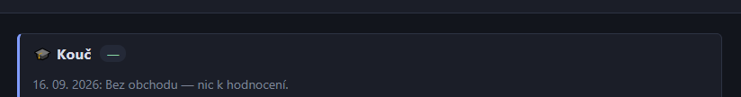
Kouč nad setupy a denní doba (v1.20, #1201). V záložce Setupy je nad tabulkou blok 🎓 Kouč nad setupy (60 dní, aktuální mechanika): doporučení „⛔ Neobchodovat …" / „✅ Soustředit se na …" pro kombinace šablona × okno seance, šablona × gamma režim, poloha v pásmu, obchodovatelnost a důvěra — jen se vzorkem n ≥ 30 a Wilsonovou dolní mezí úspěšnosti (Ø R ≤ −0,15 = vypnout, ≥ +0,20 = zdůraznit), seřazené podle Σ R. Pod tím nejlepší a nejhorší okno dne a četnost příznaků setupů (proti režimu, mimo pásmo, stop nad rozpočtem, nízké RRR, timeout, prodělečné okno). V panelu Kouč v Deníku je sekce Denní doba zvlášť pro tvoje obchody a pro setupy: segmenty seance (Globex noc · US premarket · US open +30 · RTH dopoledne · Poledne · Power hour · Posledních 30 min · Po close) s Ø R, n, úspěšností a Σ R, nejlepší zeleně, nejhorší červeně; okna pod 20 vzorků jsou označená jako malý vzorek. Hodiny se počítají v pražském čase.
Pinovaný kontrakt ve watchlistu. Ticker ES znamená automatický front
kontrakt (engine roluje 8 dnů před expirací, ADR-0039). Když chceš vidět
přesně jeden futures kontrakt a jeho opční řetěz — typicky v roll týdnu
kvartální 0DTE na dobíhajícím kontraktu — přidej do watchlistu ticker
s kódem kontraktu: ESU6, NQZ6 (kód měsíce H/M/U/Z + poslední číslice
roku). Pinovaný kontrakt nahrazuje automatický (stejný počet pipeline
a market data lines), platí až do expirace a v hlavičce nese štítek
📌 kontrakt U6. Má vlastní historii (setupy, statistiky) oddělenou od ES;
po expiraci ho z watchlistu odeber (engine hlásí chybu setupu).
Magnet úrovně (#1223).
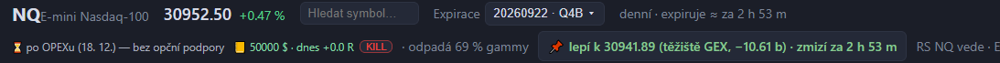
Chip v hlavičce (🧲 / 📌 / ⚖️) a věta v Briefingu nad verdiktem říkají jednou větou, kam dnešní positioning cenu tlačí (negativní gamma → nejbližší put wall pod cenou, případně call wall nad ní), kam ji lepí (pozitivní gamma → těžiště GEX) nebo že je na hraně (±5 b od flipu), s odpočtem, kdy tlak zmizí (expirace zobrazeného řetězu). Je to čtení existujících úrovní, ne signál; bez potřebné zdi se chip nekreslí.
Akcie, ETF a indexy — ad-hoc pohled přes tastytrade (#206). Do vyhledávání
symbolu zadej SPY, QQQ, SPX, KO nebo jakýkoli ticker s opcemi u tastytrade.
Engine pohled založí do sekund (bez IBKR market data lines): svíčky podkladu se
dotáhnou do minulosti (dxFeed Candle, s objemem), první heatmapa naskočí do
~10 s, dál se skládá po minutách. Zdi, flip a Max Pain začínají v okamžiku
zapnutí — historie opčního řetězu se zpětně nedá dopočítat. Pohled žije,
dokud ho máš otevřený (3 min po zavření se uklidí); setupy pro tyto tickery
nevznikají (jen ES/NQ), kouč ale vyhodnotí i ruční obchody na akciích z deníku.
Prémie v $ (panel PUT / CALL a profil v jednotce Prémie $) počítají
s multiplikátorem 100 (jeden opční kontrakt = 100 akcií,
u indexu ×100). Dřív aplikace u akcií brala 50 jako u ES a ukazovala poloviční
částky (#1400). Produkt, jehož multiplikátor aplikace nezná (např. NG), ukáže
P/C jen jako poměr bez částek v $ a profil v kontraktech se štítkem
Multiplikátor neznámý → kontrakty.
Roll týden a denní 0DTE. Po roll date (8 dnů před kvartální expirací) sleduje
ES už nový kontrakt (Z6) a IBKR řetěz začíná až kvartální expirací. Denní 0DTE
do pátku běží ještě na dobíhajícím kontraktu (U6) — v aplikaci existují jen z
tastytrade jako „jen heatmapa, bez zdí a úrovní“ (bez zdí, flipu, Max Pain
a Opt Vol; hlavička i kalendář to označí). Aplikace proto otevírá defaultně
nejbližší IBKR expiraci. Chceš-li 0DTE se zdmi, přidej v roll týdnu pinovaný
ticker ESU6 — Briefing (karta Expirační týden) na to upozorní a nabídne
tlačítko Přidat ESU6.
Shrnutí kouče. Nahoře v panelu Kouč (Deník) je 4–6 vět složených jen z čísel: týden (obchody, Σ R, úspěšnost, disciplína), nejdražší chyba, tvoje nejlepší/nejhorší okno dne, okna setupů detektoru a hlavní doporučení pro setupy. V Briefingu je ráno karta 🎓 Kouč — na co si dnes dát pozor: 1–4 body (pravidla z týdenního reportu, prodělečné okno dne, setup k vypnutí).
Trénink obchodování bez brokera: ordery se zadávají do aplikace, fily simuluje engine proti živé ceně (1min bary; market na open dalšího baru
paper — plán vs. realita,
MFE/MAE, výsledek v R i $ — a je tak vstupem kouče.Risk vrstva blokuje: order nad rozpočtem rizika (1 % equity), po denní (−3 R) či týdenní (−6 R) brzdě nebo při zapnutém kill switchi se nepodá; odpověď říká proč a kolik kontraktů by prošlo. Jedna pozice/order na symbol, vše denní (v settle se pozice zavřou). Kill switch zavře vše a zablokuje nové ordery, dokud ho neodblokuješ.
Ovládání (fáze 2): tlačítko ⚡ Order v liště grafu otevře ticket nad grafem — LONG/SHORT, typ (limit / market / stop-průraz), entry (předvyplněný aktuální cenou), stop a cíl (výchozí −10/+20 b ES, −25/+50 b NQ), počet kontraktů se dopočítá z rozpočtu (ukáže „riziko X $ · max N ks · RRR"), setup z playbooku a poznámka. Nad rozpočtem nebo při brzdě je tlačítko Podat zakázané s důvodem; odmítnutí serverem se vypíše. V hlavičce je chip 📒 paper účtu: equity, R dne, brzda/KILL, pozice nebo čekající order aktuálního symbolu s tlačítkem ✕ Zavřít/Zrušit (provede se na open dalšího baru) a tlačítko KILL (zavře vše, zablokuje nové; pak „Odblokovat"). Entry/stop/cíl otevřeného orderu se kreslí v grafu jako čárkované čáry (bílá/červená/zelená). Tlačítko ✎ u pozice v chipu umožní posunout stop nebo cíl; posun stopu dál od entry nad rozpočet server odmítne a každá změna se zapíše do historie — kouč z ní hlásí „stop posunutý dál od entry“ (trest 20). Kontext orderu (režim, flip, zdi, tendence, seance) se ukládá při podání a putuje s obchodem do Deníku (#932).
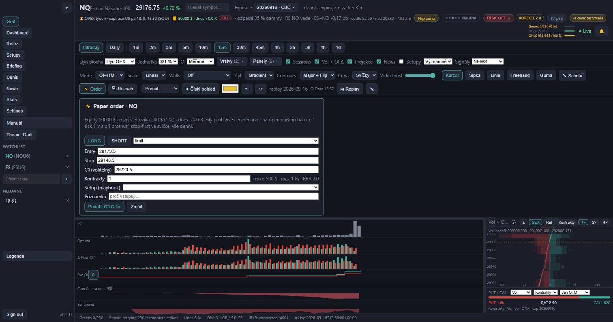
Třikrát… čtyřikrát do roka (3. pátek března, června, září a prosince) se trh chová jinak než jindy a aplikace to od v1.20 ví:
| Kdy | Co se děje | Co ukazuje aplikace |
|---|---|---|
| Roll date — čtvrtek 8 dní před expirací (CME) | Objem a likvidita přecházejí do dalšího kontraktu (U6 → Z6). Starý kontrakt dobíhá: drží ho hedgeři AM-settled SPX opcí a ti, kdo chtějí cash settlement. | Engine od tohoto dne jede na novém kontraktu (bary, CumΔ, spot, řetěz) — cena v grafu sedí s tím, co obchoduješ na MES/MNQ. Chip ⌛ „roll proběhl", ⌛ v ose, alert. |
| OPEX týden (po–čt) | Cena tažená hedgingem dealerů, ne náladou: nad flipem long gamma = lepení ke strikům a stlačená volatilita, pod flipem short gamma = vzduchové kapsy a ostré odrazy. Ve středu ráno expiruje VIX (odejde gamma tlumící VIX); FOMC v tomto týdnu dopadá na trh s plnou opční pozicí. | Chip ⌛ „OPEX týden", karta Expirační týden v Briefingu se scénářem A (špatná nálada) / B (dobrá nálada) a tím, co sledovat. Sentiment ber v OPEX týdnu jako šum. |
| Pátek 9:30 ET (15:30 CEST) — SOQ | Kvartální futures a kvartální opce se vypořádají z otevíracích cen všech 500 akcií (Special Opening Quotation) — velká část „witchingu" proběhne ráno, ne odpoledne. Open bývá rozhozený proti noční ceně futures. | Kvartální futures a standardní kvartální opce končí v SOQ. Aplikace na kořenovém tickeru (ES, NQ) sleduje týdenní sérii nového kontraktu (EW3/QN3) — odpočet míří na 16:00 ET a setupy i sondy běží celou seanci (v1.31, #1366). Na 9:30 ET míří jen u pinovaného expirujícího kontraktu (ESZ6). Alert „kvartální expirace proběhla". |
| Pátek odpoledne / close | Tichý drift k velkým strikům (pinning); v 16:00 ET expirují akciové opce, SPY, SPXW a probíhá kvartální rebalance S&P 500 — objemově největší den kvartálu. | Forward GEX ukazuje strukturu po expiraci (dnešní OI minus to, co odpadne); chip „odpadá X % gammy". |
| Pondělí po | Bez opční podpory: put wall, který držel, zmizel; trh, který do OPEXu trendoval, se zastaví nebo obrátí; týden po zářijové expiraci je sezónně jeden z nejslabších. Nálada se do ceny propisuje až teď. | Chip ⌛ „po OPEXu — bez opční podpory". |
Dvě čísla, která rozhodují: flip / put wall (zlom režimu) a dno negativní gamma zóny pod ním. Směr po expiraci = kombinace toho, co udělá Fed, a kde vůči flipu trh v pátek zavře.
Proč to není jen zajímavost. 15. 9. 2026 jel engine ještě na dobíhajícím
ESU6: RTH objem na sledovaném kontraktu spadl z ~1,07 M (11. 9.) na 176 k,
tisky 1/min — a úrovně byly v ceně, která se od obchodované (Z6) lišila
o ~275 b na NQ. Od v1.20 se front kontrakt volí podle roll date, ne podle
nejbližší expirace (GEXLENS_FRONT_ROLL_DAYS, default 8).
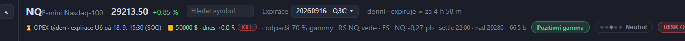
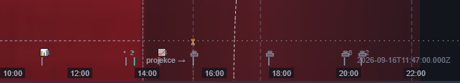
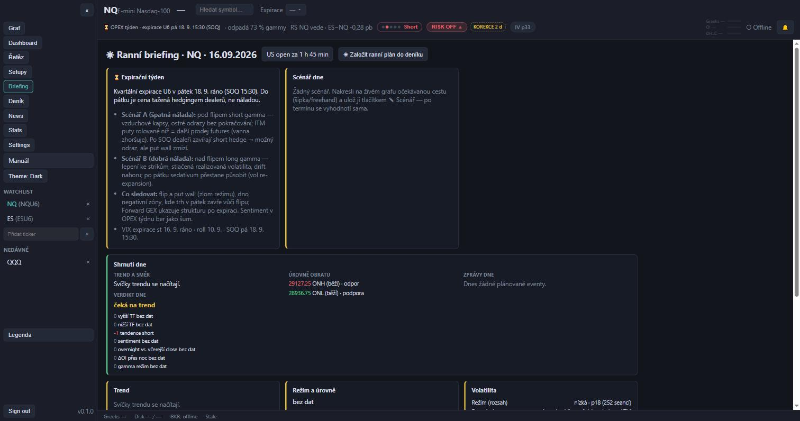
Speciální případ červeného režimu s opačným ranním chováním. Když trh zavře výrazně níž a přes noc otevře v negativní gammě, leží pod cenou hromada čerstvě otevřených putů (včerejší zajišťování — na Řetězu je poznáš podle velkých kladných ΔOI na putech pod trhem). Dealeři jsou z té masy dlouzí gamma: každý pokles k ní je nutí nakupovat, a tak její horní gamma okraj funguje v premarketu jako klouzavá podpora, která má tendenci sunout index vzhůru směrem k Max Pain.
Pravá (modelovaná) část mapy vychází z aktuálního snímku IV a ranního OI: velký příliv nového OI nebo skok volatility pásy přeskládá; dnešní čerstvý positioning model nevidí. Ber večerní plán z mapy ~hodinu předem a průběžně ověřuj, že pásy stojí. Zdi navíc nejsou stejně silné: cenovka zdi ukazuje dominanci v % (podíl zdi na síle celé strany profilu) a úseky, kde zeď drží méně než 15 % síly strany, se kreslí ztlumeně tečkovaně — slabá zeď je jen statistické maximum, ne opora pro obchod. Vždy křížově potvrď s měřenou vrstvou (walls, GEX Levels, CumΔ) — model je navigace, měření je terén.
GEXLens počítá GEX z opcí na ES futures (FOP) — podkladem je přímo ten kontrakt, který obchoduješ. Striky, OI, spot i všechny úrovně jsou tedy nativně v ES a nikde se nic nepřevádí z indexu.
Většina veřejných GEX služeb (SpotGamma, MenthorQ a podobné) počítá úrovně nad SPX/SPY. Mezi SPX a ES je rozdíl (cost of carry), který se během kvartálu smršťuje — proto nelze porovnávat jejich čísla s našimi 1:1. Rozdíl není chyba ani jedné strany; jsou to úrovně nad jiným podkladem.
Praktický důsledek: náš flip na 6 812 a jejich flip na 6 78x můžou popisovat tutéž strukturu. Srovnávej vzdálenost úrovně od aktuální ceny téhož podkladu, ne absolutní čísla.
| Pojem | Význam |
|---|---|
| GEX (Gamma Exposure) | Odhad, kolik dolarů musí dealeři hedgeovat na 1 bod pohybu podkladu. Kladný = dealeři tlumí pohyb, záporný = zesilují. Počítá se z opcí na ES futures (FOP), takže všechny úrovně jsou nativně v ES — viz kap. 18, proč se liší od SPX služeb. |
| Basis | Rozdíl mezi cenou futures a indexu (cost of carry), který se během kvartálu smršťuje. V GEXLens nikde nevystupuje — podkladem opcí je přímo ES kontrakt. Relevantní jen při srovnávání s cizími SPX službami. |
| Roll | Přechod na další kvartální kontrakt (likvidita se stěhuje ~2. čtvrtek měsíce expirace). Cenová historie přes roll obsahuje skok o roll spread — není to pohyb trhu (ADR-0028). |
| Knihovna setupů / stádium | Setupy → Knihovna (v1.27): pro každou buňku šablona × ticker volíš Auto (rozhoduje brána), Stín (měří se, neobchoduje) nebo Zkoušku (přebije bránu do vyčerpání rozpočtu). Sizing a brzdy platí vždy. |
| Průkaznost (n / n potřebné) | Kolik vzorků buňka má proti tomu, kolik by prokázalo edge +0,2 R. Knihovna podle ní řadí, ne podle ØR. |
| Flip (zero-gamma) | Cena, kde kumulativní NetGEX prochází nulou — hranice mezi režimem komprese a expanze volatility. |
| Dynamický flip | Modelová verze flipu: nula Dyn GEX křivky (BS model, jemnější mřížka). S naměřeným flipem tvoří flip zónu (kap. 18). |
| Dyn GEX (vrstva) | Modelované pole NetGEX pro hypotetické ceny přes pásmo a čas — „jakou gammu potká cena na úrovni X v čase T". Zelená tlumí, červená zesiluje. |
| Settle | Vypořádání/konec životnosti expirace — denní ES/NQ opce 20:00 UTC (22:00 SELČ). Pak jejich gamma z trhu zmizí. |
| PDC (previous day close) | Včerejší close = RTH close předchozí obchodní seance: close poslední minuty před settle 16:00 ET (zkrácená seance 13:00 ET), v pondělí pátek — ne poslední minuta Globexu. Z něj hlasuje overnight ve verdiktu dne a je to úroveň PDC v cílech automatického scénáře (#1241, #1595), v kartě Včera a overnight, v gapu Ranního checklistu, v Úrovních obratu a v kontextu deníku (#1596; graf kreslí jen PDH/PDL). |
| Gamma crunch | Růst ATM gammy s blížící se expirací — zajišťovací toky mají večer největší sílu (pin, nebo akcelerace). |
| Δ-vážení | Pruhy profilu × delta opce = kolik futures dealer reálně drží. Večer polarizuje (OTM→0, ITM→1), proto strana pruhů „mizí". |
| Call wall / Put wall | Strike s největší koncentrací NetGEX nad/pod spotem. Pravděpodobnostní úroveň, ne bariéra — tržní význam má jen při dostatečné dominanci vůči zbytku profilu (viz cenovka zdi s %); úrovně se během dne přelévají, u 0DTE výrazně. |
| OI zeď | Strike s největším otevřeným zájmem na své straně (call nad spotem, put pod ním) z denního OI archivu přes celý řetěz — magnet k expiraci, ne hedging teď. Kreslí se jen při podílu ≥ 20 % OI strany; nic se nedopočítává (kap. 5). |
| Centroid (HVL) | Vážené těžiště |
| Max Pain | Strike, kde by při expiraci vypršelo nejméně hodnoty opcí — trh k němu v expiracích často „přišpendlí" (pinning). |
| OI (Open Interest) | Počet otevřených kontraktů; mění se jednou denně (CME publikuje ráno). |
| ΔOI vs. včera | Změna OI proti předchozímu obchodnímu dni (v pondělí proti pátku) — kde přes noc vznikly/zanikly pozice. |
| Evo OI | Evolution = vývoj. Spodní panel s celkovým OI (call/put) minutu po minutě. Spolu s objemem rozliší, jestli se pozice budují (objem ↑, OI ↑), nebo zavírají (objem ↑, OI ↓). Tlačítko Δ přepíná změnu od začátku osy vs. absolutní úroveň. |
| Contours (kontury) | Bílé izolinie nad zobrazeným polem na prazích % síly z p99 (Major 65/95, All 40/70, vždy dvě na stranu). Říkají, jak ostrá je hranice tlumící zóny — zdi říkají kde, kontury jak ostře. |
| $/bod vs. $/1 % | Jednotka Dyn GEX a GEX křivky (Charm a Vanna mají dolarovou deltu, #1401). $/bod = surové pole (gamma expozice na 1 bod pohybu). $/1 % = totéž vážené P²/100 — kolik dolarů dealeři přeobchodují při 1% pohybu; srovnatelné napříč cenovými hladinami, proto výchozí. Zdi, levels ani flip přepínač nemění. |
| Δ Flow C/P | Delta-vážený opční tok zvlášť za call/put stranu — na které straně se právě obchoduje. |
| Cum Δ | Kumulativní delta flow — součet (směr obchodu × velikost × delta × multiplikátor) přes den. |
| Hot zóna | Historický termín z původního návrhu (IBKR tick-by-tick pásmo ATM ±15) — nikdy nebyl v provozu a od v1.14 je nahrazen: stranu agresora pro celý sbíraný řetěz dodá dxFeed TimeAndSale (#615, ADR-0032). V textech o řetězu snapshotů znamená „hot zóna“ jen pásmo ATM ±15 strikes, které se sbírá každý cyklus. |
| Stale | Data starší než 5 minut — vizuálně odlišená. |
| VEX (Vega Exposure) | vega × OI per strana — kolik $ přecenění drží dealeři na striku při změně IV o 1 bod. „Volatility walls" před událostmi. |
| Charm | Citlivost delty na čas — zajišťovací toky, které vznikají jen plynutím času k settle. |
| Vanna | Citlivost delty na volatilitu — toky spuštěné skokem/propadem IV. |
| FA levels (flow-adjusted) | Flip/walls počítané z odhadu OI (od v6 ranní OI + ρ·dnešní objem strany, do v6 + klasifikovaný čistý tok) — ukazují stěhování úrovní dřív, než to potvrdí zítřejší OI archiv. |
| SentIndex | Souhrnný sentiment zpráv z news-engine — vážený součet klasifikovaných událostí s rozpadem po tématech; kladný risk-on, záporný risk-off. |
| RISK ON / RISK OFF | Stav SentIndexu vůči MA5/MA10 s potvrzením; historie přepnutí = vlny (Stats). |
| Korekční epizoda (pokus / negace) | Pokles denního SentIndexu o ≥ 1 σ pod 20denní maximum; pokus = zahlazeno do 10 obchodních dní, negace = ne. Předběžné parametry (v1.17, #565). |
| Signál (NEWS/COMBINED) | Empiricky gate-ovaná Long/Short nápověda z reakcí na zprávy; COMBINED navíc vyžaduje souhlas GEX kontextu. |
| Gate / Wilson LB | Podmínka spuštění signálů: bucket musí mít n ≥ 30 reakcí a spodní mez 95% intervalu úspěšnosti (Wilson lower bound) > 0,50 a |
| Tendence | Souhrnný chip Strong Short … Strong Long z 12 složek positioningu a toku (flip, zdi, CumΔ, charm/vanna tok…); orientační, váhy zatím nekalibrované. Od mechaniky v6 (#1403, verze 5): sklon a rozchod CumΔ jen z tisků od burzy a jen v rámci seance (prvních 9 minut po otevření, 17:00–17:08 CT, a okno s mezerou nehlasují), poloha mezi zdmi má váhu 0 (v rozpadu zašedlá), Max Pain hlasuje jen 0–90 min do settle a hystereze pásma začíná s otevřením seance (#1460, #1581, #1584). Od mechaniky v6 se při zavřeném trhu (víkend, denní pauza) tendence nepočítá (#1622). Otevřená stránka drží poslední stav seance, po novém načtení o víkendu chip chybí, protože řada dne (UTC) nemá řádky; od v6 bez živé ceny (všechny zdroje spotu staré) nehlasují složky z polohy ceny (#1600). |
| Drift | Statistický rozchod čerstvé úspěšnosti bucketu s historickou — signál, že se trh vůči modelu změnil. |
GEXLens · dokumentace je součástí repozitáře kEchiCZ/GEX. Technický manuál pro správce a vývojáře: docs/manual/ADMIN-MANUAL.md.